PREY EXHIBIT LESS RISKY BUT MORE VARIABLE BEHAVIOUR IN HIGH PREDATION ENVIRONMENTS
Supplementary Material
2026-09-29
1 Setting up
1.1 Loading Packages
# Loading Packages
pacman::p_load(devtools,
tidyverse,
metafor,
patchwork,
R.rsp, orchaRd,
emmeans,
metafor,
orchaRd,
stringr,
dplyr,
broom,
tidyverse,
here,
broom,
ggplot2,
viridis,
data.table,
Matrix,
matrixcalc,
ape,
multcomp,
taxize,
cowplot,
kableExtra,
Pandoc,
magrittr
) 1.2 Reading in Dataset and Phylogentic Tree
# Reading in Data
dat <- read.csv(here("Data/Analysis_ready.csv"))
#change a few specie names for analysis
dat$Species <- gsub("Equus_quagga","Equus_burchellii_quagga", dat$Species)
dat$Species <- gsub("Macropus_eugenii","Notamacropus_eugenii", dat$Species)
dat$Species <- gsub("Hyla_versicolor", "Dryophytes_versicolor", dat$Species)
dat$Species <- gsub("Bufo_americanus", "Anaxyrus_americanus", dat$Species)
dat$Species <- gsub( "Gambusiaa_hubbsi","Gambusia_hubbsi", dat$Species)
dat$Species <- gsub( "Gambusia_hubbsi ","Gambusia_hubbsi", dat$Species)
dat$Species <- gsub( "Brachyraphis_episcopi","Brachyrhaphis_episcopi", dat$Species)
# Reading in tree
tree1 <- read.tree(here("Tree/Tree_risk.tre"))
# Getting branch length and correlation matrix
tree1b <- compute.brlen(tree1)
cor1 <- vcv(tree1b, corr=T)
# checking the match
setdiff(dat$Species, tree1$tip.label)
setdiff(tree1$tip.label, dat$Species)
# creating non-phylo columns - has to be tree column
dat$Species2 <- dat$Species1.3 Dataset
# making a scrollable table
kable(dat, "html", escape = FALSE) %>% kable_styling("striped", position = "left", full_width = TRUE) %>%
column_spec(ncol(dat), width_min = "5in") %>%
scroll_box(width = "100%",
height = "500px")| Title | Location.extracted | Can_be_negitive | Species | Class | First_author | Year | Mean_control | SD_control | n_control | Mean_exp | SD_exp | n_exp | Error_type | Behaviour_type | Metric | Real_predator | Sex | Predation_pressure | Environment | Low_or_no_pred | Comparison_type | Adult | time_exposed_days | Sign_inverted | Notes | Species2 |
|---|---|---|---|---|---|---|---|---|---|---|---|---|---|---|---|---|---|---|---|---|---|---|---|---|---|---|
| Altitudinal differences in foraging decisions under predation risk in great tits | Fig.3 d, inverted | No | Parus_major | Aves | Crouchet | 2024 | 0.6000 | 0.0400 | 91 | 0.5510 | 0.070 | 91 | SE | Foraging | Proportion of vistits | 1 | Male | Wild | Lab | Low | WW | Both | Max | No | Taken the inverse as the control bc proportion of pred playback vs control | Parus_major |
| Altitudinal differences in foraging decisions under predation risk in great tits | Fig.3 d, inverted | No | Parus_major | Aves | Crouchet | 2024 | 0.6510 | 0.0550 | 91 | 0.5310 | 0.065 | 91 | SE | Foraging | Proportion of vistits | 1 | Female | Wild | Lab | Low | WW | Both | Max | No | Taken the inverse as the control bc proportion of pred playback vs control | Parus_major |
| Anti-predator behavior in two brown frogs: differences in the mean behaviors and in the structure of animal personality variation | Table s1 | Yes | Rana_dalmatina | Amphibia | Castellano | 2023 | 0.1900 | 0.0700 | 96 | 0.1400 | 0.070 | 96 | SD | Activity | Index of activity | 1 | Mixed | Lab | Lab | No | CC | Juvenille | 26 | No | Rana_dalmatina | |
| Anti-predator behavior in two brown frogs: differences in the mean behaviors and in the structure of animal personality variation | Table s1 | Yes | Rana_dalmatina | Amphibia | Castellano | 2023 | 0.1900 | 0.0700 | 96 | 0.0900 | 0.040 | 96 | SD | Activity | Index of activity | 1 | Mixed | Lab | Lab | No | CC | Juvenille | 26 | No | Rana_dalmatina | |
| Anti-predator behavior in two brown frogs: differences in the mean behaviors and in the structure of animal personality variation | Table s1 | Yes | Rana_latastei | Amphibia | Castellano | 2023 | 0.1300 | 0.0400 | 96 | 0.1200 | 0.040 | 96 | SD | Activity | Index of activity | 1 | Mixed | Lab | Lab | No | CC | Juvenille | 26 | No | Rana_latastei | |
| Anti-predator behavior in two brown frogs: differences in the mean behaviors and in the structure of animal personality variation | Table s1 | Yes | Rana_latastei | Amphibia | Castellano | 2023 | 0.1300 | 0.0400 | 96 | 0.1000 | 0.030 | 96 | SD | Activity | Index of activity | 1 | Mixed | Lab | Lab | No | CC | Juvenille | 26 | No | Rana_latastei | |
| Anti-predator behavior in two brown frogs: differences in the mean behaviors and in the structure of animal personality variation | Table s1 | Yes | Rana_dalmatina | Amphibia | Castellano | 2023 | 0.6700 | 0.2600 | 96 | 0.3900 | 0.280 | 96 | SD | Activity | Movement speed | 1 | Mixed | Lab | Lab | No | CC | Juvenille | 26 | No | Rana_dalmatina | |
| Anti-predator behavior in two brown frogs: differences in the mean behaviors and in the structure of animal personality variation | Table s1 | Yes | Rana_dalmatina | Amphibia | Castellano | 2023 | 0.6700 | 0.2600 | 96 | 0.3200 | 0.160 | 96 | SD | Activity | Movement speed | 1 | Mixed | Lab | Lab | No | CC | Juvenille | 26 | No | Rana_dalmatina | |
| Anti-predator behavior in two brown frogs: differences in the mean behaviors and in the structure of animal personality variation | Table s1 | Yes | Rana_latastei | Amphibia | Castellano | 2023 | 0.2900 | 0.1400 | 96 | 0.2600 | 0.130 | 96 | SD | Activity | Movement speed | 1 | Mixed | Lab | Lab | No | CC | Juvenille | 26 | No | Not a mistake in mean - same value | Rana_latastei |
| Anti-predator behavior in two brown frogs: differences in the mean behaviors and in the structure of animal personality variation | Table s1 | Yes | Rana_latastei | Amphibia | Castellano | 2023 | 0.2900 | 0.1400 | 96 | 0.2600 | 0.130 | 96 | SD | Activity | Movement speed | 1 | Mixed | Lab | Lab | No | CC | Juvenille | 26 | No | Not a mistake in mean - same value | Rana_latastei |
| Antipredator syndrome: modelling and testing behavioural, morphological and life history plasticity in tadpoles | Figure 7 | Yes | Rana_dalmatina | Amphibia | Castellano | 2025 | 0.6500 | 0.6200 | 32 | -0.0260 | 0.590 | 32 | SD | Activity | PCA values | 1 | Mixed | Lab | Lab | No | CC | Juvenille | 30 | No | No swiftness bc not risk taking | Rana_dalmatina |
| Behavioral adjustments to prior predation experience and food deprivation of a common cyprinid fish species vary between singletons and a group | Fig.2 | No | Spinibarbus_sinensis | Actinopterygii | Wang | 2019 | 20.5000 | 3.8000 | 20 | 10.2600 | 1.910 | 20 | SE | Activity | Proportion | 1 | Mixed | Lab | Lab | No | CC | Juvenille | 14 | No | only singles are groups are testing social conditions within the assay | Spinibarbus_sinensis |
| Behavioral and morphological responses to perceived predation risk: a field experiment in passerines | Fig.1 | Yes | Parus_major | Aves | Abbey-Lee | 2016 | 3.9400 | 1.2000 | 76 | 0.4500 | 1.550 | 67 | SE | Exploration | Change in score | 0 | Mixed | Wild | Lab | No | WW | Adult | 21 | No | Parus_major | |
| Behavioral and life‐historical responses of larval American toads to an odonate predator | Fig.3 | No | Anaxyrus_americanus | Amphibia | Skelly | 1990 | 25.9000 | 2.0000 | 28 | 16.3000 | 4.000 | 28 | SE | Activity | Mean proportion active | 1 | Mixed | Lab | Lab | No | WW | Juvenille | 15 | No | 1 | Anaxyrus_americanus |
| Behavioral and life‐historical responses of larval American toads to an odonate predator | Fig.3 | No | Anaxyrus_americanus | Amphibia | Skelly | 1990 | 36.6000 | 2.4000 | 30 | 27.5900 | 4.200 | 26 | SE | Activity | Mean proportion active | 1 | Mixed | Lab | Lab | No | WW | Juvenille | 15 | No | 2 | Anaxyrus_americanus |
| Behavioral and life‐historical responses of larval American toads to an odonate predator | Fig.3 | No | Anaxyrus_americanus | Amphibia | Skelly | 1990 | 34.9600 | 2.9000 | 29 | 20.6000 | 3.400 | 27 | SE | Activity | Mean proportion active | 1 | Mixed | Lab | Lab | No | WW | Juvenille | 15 | No | 3 | Anaxyrus_americanus |
| Behavioral and life‐historical responses of larval American toads to an odonate predator | Fig.3 | No | Anaxyrus_americanus | Amphibia | Skelly | 1990 | 35.9000 | 4.4000 | 12 | 27.9000 | 1.500 | 14 | SE | Activity | Mean proportion active | 1 | Mixed | Lab | Lab | No | WW | Juvenille | 15 | No | 4 | Anaxyrus_americanus |
| Behavioural responses of feral and domestic guppies (Poecilia reticulata) to predators and their cues | Fig2 | No | Poecilia_reticulata | Actinopterygii | Swaney | 2015 | 5.7000 | 2.3000 | 19 | 26.0000 | 12.000 | 19 | SE | Emergence | Seconds | 1 | Male | Wild | Wild | No | WC | Adult | Max | Yes | Time hidden | Poecilia_reticulata |
| Behavioural responses of feral and domestic guppies (Poecilia reticulata) to predators and their cues | Fig2 | No | Poecilia_reticulata | Actinopterygii | Swaney | 2015 | 219.4700 | 32.0000 | 19 | 321.0000 | 74.000 | 19 | SE | Shoaling | Seconds | 1 | Male | Wild | Wild | No | WC | Adult | Max | Yes | Shoaling, no predator only | Poecilia_reticulata |
| Boldness in extreme environments: temperament divergence in a desert-dwelling fish | Fig.2 | No | Chlamydogobius_eremius | Actinopterygii | Moran | 2016 | 3.1000 | 1.4000 | 41 | 3.2400 | 1.440 | 41 | SD | Emergence | Seconds | 1 | Female | Wild | Lab | No | WW | Adult | Max | Yes | Correct, not for future checking | Chlamydogobius_eremius |
| Boldness in extreme environments: temperament divergence in a desert-dwelling fish | Fig.2 | No | Chlamydogobius_eremius | Actinopterygii | Moran | 2016 | 0.5600 | 0.2200 | 41 | 0.6800 | 0.250 | 41 | SD | Exploration | Seconds | 1 | Female | Wild | Lab | No | WW | Adult | Max | No | Correct, not for future checking | Chlamydogobius_eremius |
| Boldness in extreme environments: temperament divergence in a desert-dwelling fish | Fig.2 | No | Chlamydogobius_eremius | Actinopterygii | Moran | 2016 | 56.2200 | 90.0000 | 41 | 215.0000 | 120.000 | 41 | SD | Neophobia | Seconds | 1 | Female | Wild | Lab | No | WW | Adult | Max | Yes | Correct, not for future checking | Chlamydogobius_eremius |
| Boldness in extreme environments: temperament divergence in a desert-dwelling fish | Fig.2 | No | Chlamydogobius_eremius | Actinopterygii | Moran | 2016 | 3.6000 | 1.1000 | 41 | 4.0500 | 1.550 | 41 | SD | Emergence | Seconds | 1 | Male | Wild | Lab | No | WW | Adult | Max | Yes | Correct, not for future checking | Chlamydogobius_eremius |
| Boldness in extreme environments: temperament divergence in a desert-dwelling fish | Fig.2 | No | Chlamydogobius_eremius | Actinopterygii | Moran | 2016 | 0.4900 | 0.2900 | 41 | 0.6500 | 0.300 | 41 | SD | Exploration | Seconds | 1 | Male | Wild | Lab | No | WW | Adult | Max | No | Correct, not for future checking | Chlamydogobius_eremius |
| Boldness in extreme environments: temperament divergence in a desert-dwelling fish | Fig.2 | No | Chlamydogobius_eremius | Actinopterygii | Moran | 2016 | 91.3600 | 110.0000 | 41 | 258.0000 | 90.000 | 41 | SD | Neophobia | Seconds | 1 | Male | Wild | Lab | No | WW | Adult | Max | Yes | Correct, not for future checking | Chlamydogobius_eremius |
| Chemical cues from multiple predator-prey interactions induce changes in behavior and growth of anuran larvae | Fig.3 | No | Rana_catesbeiana | Amphibia | Eklov | 2000 | 0.3500 | 0.0300 | 814 | 0.2900 | 0.010 | 814 | SE | Activity | Proportion | 0 | Mixed | Lab | Lab | No | CC | Juvenille | N/A | No | Bluegill; 22 individuals in 37 indoor aquariums | Rana_catesbeiana |
| Chemical cues from multiple predator-prey interactions induce changes in behavior and growth of anuran larvae | Fig.3 | No | Rana_catesbeiana | Amphibia | Eklov | 2000 | 0.3500 | 0.0300 | 814 | 0.1400 | 0.009 | 814 | SE | Activity | Proportion | 0 | Mixed | Lab | Lab | No | CC | Juvenille | N/A | No | Anax | Rana_catesbeiana |
| Chemical cues from multiple predator-prey interactions induce changes in behavior and growth of anuran larvae | Fig.3 | No | Rana_catesbeiana | Amphibia | Eklov | 2000 | 0.3500 | 0.0300 | 814 | 0.2900 | 0.040 | 814 | SE | Activity | Proportion | 0 | Mixed | Lab | Lab | No | CC | Juvenille | N/A | No | Bluegill + Anax | Rana_catesbeiana |
| Comparing behavioural syndromes across time and ecological conditions in a free-ranging predator | Fig 4 total | No | Negaprion_brevirostris | Chondrichthyes | Dhellemmes | 2020 | 0.2830 | 0.0470 | 97 | 0.2630 | 0.053 | 120 | SD | Exploration | Movements | 1 | Mixed | Wild | Wild | Low | WW | Juvenille | Max | No | Negaprion_brevirostris | |
| Compensatory foraging in Trinidadian guppies: Effects of acute and chronic predation threats | Fig 1a | No | Poecilia_reticulata | Actinopterygii | Elvidge | 2014 | 8.1800 | 0.5000 | 45 | 5.8500 | 0.400 | 42 | SE | Emergence | Seconds | 1 | Female | Wild | Lab | No | WW | Adult | Max | Yes | Poecilia_reticulata | |
| Compensatory foraging in Trinidadian guppies: Effects of acute and chronic predation threats | Fig 1c | No | Poecilia_reticulata | Actinopterygii | Elvidge | 2014 | 12.5600 | 2.7400 | 45 | 12.8500 | 2.450 | 42 | SE | Activity | time moving | 1 | Female | Wild | Lab | No | WW | Adult | Max | No | Poecilia_reticulata | |
| Compensatory foraging in Trinidadian guppies: Effects of acute and chronic predation threats | Fig 1d | No | Poecilia_reticulata | Actinopterygii | Elvidge | 2014 | 1.5600 | 0.7010 | 45 | 2.0600 | 1.090 | 42 | SE | Foraging | rate of foraging | 1 | Female | Wild | Lab | No | WW | Adult | Max | No | Poecilia_reticulata | |
| Correlated behaviour and stress physiology in fish exposed to different levels of predation pressure | Fig.3 | Yes | Brachyrhaphis_episcopi | Actinopterygii | Archard | 2012 | 1.0300 | 0.3600 | 8 | -0.1400 | 0.460 | 8 | SE | Exploration | PCA values | 1 | Female | Wild | Wild | Low | WW | Adult | Max | No | Limbo; no PC2 as we can’t have same individuals tested once twice | Brachyrhaphis_episcopi |
| Correlated behaviour and stress physiology in fish exposed to different levels of predation pressure | Fig.3 | Yes | Brachyrhaphis_episcopi | Actinopterygii | Archard | 2012 | 0.3270 | 0.2800 | 8 | -0.2290 | 0.270 | 8 | SE | Exploration | PCA values | 1 | Female | Wild | Wild | Low | WW | Adult | Max | No | Macho | Brachyrhaphis_episcopi |
| Correlated behaviour and stress physiology in fish exposed to different levels of predation pressure | Fig.3 | Yes | Brachyrhaphis_episcopi | Actinopterygii | Archard | 2012 | 0.8600 | 0.4500 | 8 | 0.3380 | 0.400 | 8 | SE | Exploration | PCA values | 1 | Female | Wild | Wild | Low | WW | Adult | Max | No | QJG | Brachyrhaphis_episcopi |
| Correlated behaviour and stress physiology in fish exposed to different levels of predation pressure | Fig.3 | Yes | Brachyrhaphis_episcopi | Actinopterygii | Archard | 2012 | -0.2670 | 0.1200 | 8 | -0.5120 | 0.120 | 8 | SE | Exploration | PCA values | 1 | Male | Wild | Wild | Low | WW | Adult | Max | No | Limbo | Brachyrhaphis_episcopi |
| Correlated behaviour and stress physiology in fish exposed to different levels of predation pressure | Fig.3 | Yes | Brachyrhaphis_episcopi | Actinopterygii | Archard | 2012 | -0.8900 | 0.1200 | 8 | -0.7900 | 0.100 | 8 | SE | Exploration | PCA values | 1 | Male | Wild | Wild | Low | WW | Adult | Max | No | Macho | Brachyrhaphis_episcopi |
| Correlated behaviour and stress physiology in fish exposed to different levels of predation pressure | Fig.3 | Yes | Brachyrhaphis_episcopi | Actinopterygii | Archard | 2012 | -0.1100 | 0.2500 | 8 | 0.2700 | 0.400 | 8 | SE | Exploration | PCA values | 1 | Male | Wild | Wild | Low | WW | Adult | Max | No | QJG | Brachyrhaphis_episcopi |
| Density is more important than predation risk for predicting growth and developmental outcomes in tadpoles of spotted tree frog, Litoria spenceri (Dubois 1984) | Table 7 | No | Litoria_spenceri | Amphibia | Plenderleith | 2019 | 30.6000 | 18.3000 | 8 | 25.2000 | 18.600 | 8 | SD | Activity | Proportion | 1 | Mixed | Lab | Lab | No | CC | Juvenille | 28 | No | Low | Litoria_spenceri |
| Density is more important than predation risk for predicting growth and developmental outcomes in tadpoles of spotted tree frog, Litoria spenceri (Dubois 1984) | Table 7 | No | Litoria_spenceri | Amphibia | Plenderleith | 2019 | 23.2000 | 11.1000 | 10 | 21.4200 | 211.400 | 10 | SD | Activity | Proportion | 1 | Mixed | Lab | Lab | No | CC | Juvenille | 28 | No | Medium | Litoria_spenceri |
| Density is more important than predation risk for predicting growth and developmental outcomes in tadpoles of spotted tree frog, Litoria spenceri (Dubois 1984) | Table 7 | No | Litoria_spenceri | Amphibia | Plenderleith | 2019 | 26.8000 | 12.7000 | 20 | 21.1000 | 11.900 | 20 | SD | Activity | Proportion | 1 | Mixed | Lab | Lab | No | CC | Juvenille | 28 | No | High | Litoria_spenceri |
| Density is more important than predation risk for predicting growth and developmental outcomes in tadpoles of spotted tree frog, Litoria spenceri (Dubois 1984) | Table 7 | No | Litoria_spenceri | Amphibia | Plenderleith | 2019 | 25.7000 | 19.3000 | 8 | 18.0300 | 18.400 | 8 | SD | Foraging | Proportion | 1 | Mixed | Lab | Lab | No | CC | Juvenille | 28 | No | Low | Litoria_spenceri |
| Density is more important than predation risk for predicting growth and developmental outcomes in tadpoles of spotted tree frog, Litoria spenceri (Dubois 1984) | Table 7 | No | Litoria_spenceri | Amphibia | Plenderleith | 2019 | 19.1000 | 12.5000 | 10 | 15.3000 | 10.100 | 10 | SD | Foraging | Proportion | 1 | Mixed | Lab | Lab | No | CC | Juvenille | 28 | No | Medium | Litoria_spenceri |
| Density is more important than predation risk for predicting growth and developmental outcomes in tadpoles of spotted tree frog, Litoria spenceri (Dubois 1984) | Table 7 | No | Litoria_spenceri | Amphibia | Plenderleith | 2019 | 19.1000 | 8.7000 | 20 | 14.2000 | 7.500 | 20 | SD | Foraging | Proportion | 1 | Mixed | Lab | Lab | No | CC | Juvenille | 28 | No | High | Litoria_spenceri |
| Does the development environment cause the pace of life to change in a rainforest lizard? | Table 1 | No | Lampropholis_similis | Reptilia | Buchholz | 2024 | 90.0000 | 7.8300 | 22 | 151.0000 | 8.000 | 21 | SE | Activity | no. Trans | 1 | Mixed | Wild | Lab | No | WC | Adult | 28 | No | Lampropholis_similis | |
| Does the development environment cause the pace of life to change in a rainforest lizard? | Table 1 | No | Lampropholis_similis | Reptilia | Buchholz | 2024 | 1592.0000 | 70.8500 | 22 | 1635.0000 | 72.520 | 21 | SE | Exploration | Time to goal | 1 | Mixed | Wild | Lab | No | WC | Adult | 28 | Yes | Error in SE in the paper - corrected for data entry | Lampropholis_similis |
| Does the development environment cause the pace of life to change in a rainforest lizard? | Table 1 | No | Lampropholis_similis | Reptilia | Buchholz | 2024 | 664.3900 | 57.3000 | 22 | 716.4800 | 58.650 | 21 | SE | Shoaling | Time social | 1 | Mixed | Wild | Lab | No | WC | Adult | 28 | Yes | Lampropholis_similis | |
| Early experience affects learning performance and neophobia in a cooperatively breeding cichlid | Data | No | Neolamprologus_pulcher | Actinopterygii | Bannier | 2017 | 2.4200 | 2.4400 | 7 | 6.5700 | 12.170 | 7 | SD | Emergence | Time to emerge | 1 | Male | Lab | Lab | No | CC | Adult | 63 | Yes | no social | Neolamprologus_pulcher |
| Early experience affects learning performance and neophobia in a cooperatively breeding cichlid | Data | No | Neolamprologus_pulcher | Actinopterygii | Bannier | 2017 | 1.8570 | 1.2100 | 7 | 1.7100 | 1.250 | 7 | SD | Emergence | Time to emerge | 1 | Male | Lab | Lab | No | CC | Adult | 63 | Yes | social | Neolamprologus_pulcher |
| Early experience affects learning performance and neophobia in a cooperatively breeding cichlid | Data | No | Neolamprologus_pulcher | Actinopterygii | Bannier | 2017 | 5.4300 | 2.7600 | 7 | 11.8000 | 15.000 | 7 | SD | Neophobia | Time to reach foraging tray with novel object | 1 | Male | Lab | Lab | No | CC | Adult | 63 | Yes | no social | Neolamprologus_pulcher |
| Early experience affects learning performance and neophobia in a cooperatively breeding cichlid | Data | No | Neolamprologus_pulcher | Actinopterygii | Bannier | 2017 | 30.8500 | 58.3600 | 7 | 28.3300 | 56.230 | 7 | SD | Neophobia | Time to reach foraging tray with novel object | 1 | Male | Lab | Lab | No | CC | Adult | 63 | Yes | social | Neolamprologus_pulcher |
| Early experience affects learning performance and neophobia in a cooperatively breeding cichlid | Data | No | Neolamprologus_pulcher | Actinopterygii | Bannier | 2017 | 2.5700 | 2.6400 | 7 | 8.7140 | 13.940 | 7 | SD | Emergence | Time to emerge | 1 | Female | Lab | Lab | No | CC | Adult | 63 | Yes | no social | Neolamprologus_pulcher |
| Early experience affects learning performance and neophobia in a cooperatively breeding cichlid | Data | No | Neolamprologus_pulcher | Actinopterygii | Bannier | 2017 | 3.0000 | 2.8200 | 7 | 2.8570 | 3.240 | 7 | SD | Emergence | Time to emerge | 1 | Female | Lab | Lab | No | CC | Adult | 63 | Yes | social | Neolamprologus_pulcher |
| Early experience affects learning performance and neophobia in a cooperatively breeding cichlid | Data | No | Neolamprologus_pulcher | Actinopterygii | Bannier | 2017 | 15.3300 | 24.9600 | 7 | 18.8600 | 16.320 | 7 | SD | Neophobia | Time to reach foraging tray with novel object | 1 | Female | Lab | Lab | No | CC | Adult | 63 | Yes | no social | Neolamprologus_pulcher |
| Early experience affects learning performance and neophobia in a cooperatively breeding cichlid | Data | No | Neolamprologus_pulcher | Actinopterygii | Bannier | 2017 | 7.2860 | 4.4600 | 7 | 8.5700 | 8.520 | 7 | SD | Neophobia | Time to reach foraging tray with novel object | 1 | Female | Lab | Lab | No | CC | Adult | 63 | Yes | social | Neolamprologus_pulcher |
| Effects of early predation and social cues on the relationship between laterality and personality | Data | No | Gasterosteus_aculeatus | Actinopterygii | Panizzon | 2024 | 282.1900 | 10.2700 | 28 | 283.2900 | 10.740 | 38 | SD | Activity | Time spent moving | 0 | Mixed | Lab | Lab | No | CC | Juvenille | 98 | No | High density; data on sex is not complete so used full sample and recorded as mixed | Gasterosteus_aculeatus |
| Environmental and genetic effects on exploratory behavior of high- and low-predation guppies (Poecilia reticulata) | Fig.1 | Yes | Poecilia_reticulata | Actinopterygii | Burns | 2016 | 0.1780 | 0.2700 | 101 | -0.7100 | 0.260 | 48 | SE | Exploration | Score | 1 | Mixed | Wild | Wild | Low | WW | Adult | Max | No | Poecilia_reticulata | |
| Environmental and genetic effects on exploratory behavior of high- and low-predation guppies (Poecilia reticulata) | Fig.s1 | Yes | Poecilia_reticulata | Actinopterygii | Burns | 2016 | 0.8660 | 0.2400 | 18 | -0.3110 | 0.350 | 18 | SE | Exploration | Score | 1 | Female | Wild | Lab | Low | WW | Adult | Max | No | Oropuche | Poecilia_reticulata |
| Environmental and genetic effects on exploratory behavior of high- and low-predation guppies (Poecilia reticulata) | Fig.s1 | Yes | Poecilia_reticulata | Actinopterygii | Burns | 2016 | -0.5400 | 0.2600 | 18 | -0.8390 | 0.330 | 18 | SE | Exploration | Score | 1 | Female | Wild | Lab | Low | WW | Adult | Max | No | Aripo | Poecilia_reticulata |
| Environmental and genetic effects on exploratory behavior of high- and low-predation guppies (Poecilia reticulata) | Fig.s1 | Yes | Poecilia_reticulata | Actinopterygii | Burns | 2016 | 1.4040 | 0.3000 | 13 | 0.2010 | 0.270 | 18 | SE | Exploration | Score | 1 | Male | Wild | Lab | Low | WW | Adult | Max | No | Oropuche | Poecilia_reticulata |
| Environmental and genetic effects on exploratory behavior of high- and low-predation guppies (Poecilia reticulata) | Fig.s1 | Yes | Poecilia_reticulata | Actinopterygii | Burns | 2016 | 0.3970 | 0.3000 | 18 | -0.0410 | 0.303 | 18 | SE | Exploration | Score | 1 | Male | Wild | Lab | Low | WW | Adult | Max | No | Aripo | Poecilia_reticulata |
| Environmental and genetic effects shape the development of personality traits in the mangrove killifish Kryptolebias marmoratus | fig.2 | Yes | Kryptolebias_marmoratus | Actinopterygii | Edenbrow | 2013 | 0.3000 | 0.1500 | 60 | 0.4700 | 0.210 | 60 | SE | Exploration | Score | 0 | N/A | Lab | Lab | No | CC | Both | 32 | No | Kryptolebias_marmoratus | |
| Experience during development triggers between-individual variation in behavioural plasticity | Data | No | Rana_dalmatina | Amphibia | Urszan | 2018 | 3.5800 | 0.7460 | 36 | 3.2600 | 0.880 | 38 | SD | Activity | Distance | 0 | Mixed | Lab | Lab | No | CC | Juvenille | N/A | No | Rana_dalmatina | |
| Experience during development triggers between-individual variation in behavioural plasticity | Data | No | Rana_dalmatina | Amphibia | Urszan | 2018 | 2.0000 | 0.4400 | 36 | 2.1500 | 0.450 | 38 | SD | Activity | Time to resume | 0 | Mixed | Lab | Lab | No | CC | Juvenille | N/A | Yes | Rana_dalmatina | |
| Habitat stability and predation pressure affect temperament behaviours in populations of three-spined sticklebacks | Fig.3 | Yes | Gasterosteus_aculeatus | Actinopterygii | Brydges | 2008 | 0.5400 | 0.2500 | 16 | -0.6000 | 0.350 | 18 | SE | Emergence | PCA values | 1 | Mixed | Wild | Lab | Low | WW | Adult | Max | Yes | River | Gasterosteus_aculeatus |
| Habitat stability and predation pressure affect temperament behaviours in populations of three-spined sticklebacks | Fig.3 | Yes | Gasterosteus_aculeatus | Actinopterygii | Brydges | 2008 | -0.2000 | 0.2300 | 24 | 0.9000 | 0.300 | 8 | SE | Emergence | PCA values | 1 | Mixed | Wild | Lab | Low | WW | Adult | Max | Yes | Pond | Gasterosteus_aculeatus |
| Habitat stability and predation pressure affect temperament behaviours in populations of three-spined sticklebacks | Fig.3 | No | Gasterosteus_aculeatus | Actinopterygii | Brydges | 2008 | 57.7000 | 7.1000 | 16 | 39.6000 | 10.800 | 18 | SE | Activity | Score | 1 | Mixed | Wild | Lab | Low | WW | Adult | Max | No | River | Gasterosteus_aculeatus |
| Habitat stability and predation pressure affect temperament behaviours in populations of three-spined sticklebacks | Fig.3 | No | Gasterosteus_aculeatus | Actinopterygii | Brydges | 2008 | 38.3000 | 9.0000 | 24 | 59.1000 | 15.100 | 8 | SE | Activity | Score | 1 | Mixed | Wild | Lab | Low | WW | Adult | Max | No | Pond | Gasterosteus_aculeatus |
| Habitat stability and predation pressure affect temperament behaviours in populations of three-spined sticklebacks | Fig.3 | Yes | Gasterosteus_aculeatus | Actinopterygii | Brydges | 2008 | 0.0700 | 0.2100 | 16 | 0.0300 | 0.270 | 18 | SE | Neophobia | PCA values | 1 | Mixed | Wild | Lab | Low | WW | Adult | Max | Yes | River | Gasterosteus_aculeatus |
| Habitat stability and predation pressure affect temperament behaviours in populations of three-spined sticklebacks | Fig.3 | Yes | Gasterosteus_aculeatus | Actinopterygii | Brydges | 2008 | -0.1500 | 0.2300 | 24 | 0.2290 | 0.220 | 8 | SE | Neophobia | PCA values | 1 | Mixed | Wild | Lab | Low | WW | Adult | Max | Yes | Pond | Gasterosteus_aculeatus |
| Heritable and experiential effects on boldness in a tropical poeciliid | Fig.2 | No | Brachyrhaphis_episcopi | Actinopterygii | Brown | 2007 | 134.5600 | 16.6000 | 51 | 268.4200 | 40.500 | 30 | SE | Emergence | emergence time | 0 | Female | Lab | Lab | No | CC | Adult | 14 | Yes | chased vs not chased | Brachyrhaphis_episcopi |
| High-predation habitats affect the social dynamics of collective exploration in a shoaling fish | Fig.1 | No | Poecilia_reticulata | Actinopterygii | Ioannou | 2017 | 16.3700 | 5.4700 | 84 | 14.3800 | 3.800 | 118 | SD | Activity | Number of movements | 1 | Mixed | Wild | Lab | Low | WW | Adult | Max | No | Low vs high; calculated from box plot | Poecilia_reticulata |
| Isolation from mammalian predators differentially affects two congeners | Fig.1 | No | Notamacropus_eugenii | Mammalia | Blumstein | 2002 | 20.5000 | 1.7000 | 140 | 33.7900 | 2.700 | 103 | SE | Vigilance | Time spent | 1 | Mixed | Wild | Wild | Low | WW | Both | Max | Yes | Notamacropus_eugenii | |
| Isolation from mammalian predators differentially affects two congeners | Fig.1 | No | Notamacropus_eugenii | Mammalia | Blumstein | 2002 | 71.0000 | 3.2000 | 140 | 60.0000 | 2.700 | 103 | SE | Foraging | Time spent | 1 | Mixed | Wild | Wild | Low | WW | Both | Max | No | Notamacropus_eugenii | |
| Isolation from mammalian predators differentially affects two congeners | Fig.1 | No | Macropus_fuliginosus | Mammalia | Blumstein | 2002 | 21.8000 | 4.8000 | 53 | 44.2000 | 2.500 | 102 | SE | Vigilance | Time spent | 1 | Mixed | Wild | Wild | Low | WW | Both | Max | Yes | Macropus_fuliginosus | |
| Isolation from mammalian predators differentially affects two congeners | Fig.1 | No | Macropus_fuliginosus | Mammalia | Blumstein | 2002 | 70.6300 | 3.9000 | 35 | 48.2000 | 2.600 | 102 | SE | Foraging | Time spent | 1 | Mixed | Wild | Wild | Low | WW | Both | Max | No | Macropus_fuliginosus | |
| Juvenile stress disrupts the development of an exploration-boldness behavioural syndrome in convict cichlid fish | Fig.2 | Yes | Amatitlania_nigrofasciata | Actinopterygii | Hope | 2020 | 0.1570 | 0.1200 | 52 | -0.1900 | 0.260 | 42 | SD | Exploration | PCA values | 0 | Mixed | Lab | Lab | No | CC | Adult | 14 | Yes | Amatitlania_nigrofasciata | |
| Linking behavioural variance to environmental heterogeneity: Variance decomposition in surface versus cave isopod populations | Data | No | Asellus_aquaticus | Malacostraca | Kralj-Fiser | 2025 | 1.2100 | 0.6900 | 15 | 0.7900 | 0.450 | 15 | SD | Activity | Time in risky space | 1 | Mixed | Wild | Lab | Low | WW | Adult | Max | No | dark, no movement as the movement hypothesis is about food avail in the species, not predation | Asellus_aquaticus |
| Linking behavioural variance to environmental heterogeneity: Variance decomposition in surface versus cave isopod populations | Data | No | Asellus_aquaticus | Malacostraca | Kralj-Fiser | 2025 | 1.1100 | 0.6500 | 15 | 0.7500 | 0.440 | 15 | SD | Activity | Time in risky space | 1 | Mixed | Wild | Lab | Low | WW | Adult | Max | No | light, no movement as the movement hypothesis is about food avail in the species, not predation | Asellus_aquaticus |
| Maintenance of Behavioral Variation under Predation Risk: Effects on Personality, Plasticity, and Predictability | Data | No | Poecilia_reticulata | Actinopterygii | Mitchell | 2024 | 28.7900 | 37.2000 | 40 | 32.2900 | 39.000 | 40 | SD | Foraging | Time to feed after risk | 1 | Male | Lab | Lab | No | CC | Adult | 912 | Yes | Poecilia_reticulata | |
| Maintenance of Behavioral Variation under Predation Risk: Effects on Personality, Plasticity, and Predictability | Data | No | Poecilia_reticulata | Actinopterygii | Mitchell | 2024 | 3917.0000 | 2141.8000 | 40 | 3373.0000 | 2103.980 | 40 | SD | Activity | Distance | 1 | Male | Lab | Lab | No | CC | Adult | 912 | No | Poecilia_reticulata | |
| No personality without experience? A test on Rana dalmatina tadpoles | Fig.2 | No | Rana_dalmatina | Amphibia | Urszan | 2015 | 11991.6400 | 1400.8000 | 18 | 1600.8300 | 262.780 | 20 | SE | Activity | Distance | 0 | Mixed | Lab | Lab | No | CC | Juvenille | N/A | No | naïve/pred | Rana_dalmatina |
| No personality without experience? A test on Rana dalmatina tadpoles | Fig.2 | No | Rana_dalmatina | Amphibia | Urszan | 2015 | 6950.3400 | 1824.4000 | 18 | 3230.7700 | 680.400 | 17 | SE | Activity | Distance | 0 | Mixed | Lab | Lab | No | CC | Juvenille | N/A | No | group/group+pred | Rana_dalmatina |
| No personality without experience? A test on Rana dalmatina tadpoles | Fig.2 | No | Rana_dalmatina | Amphibia | Urszan | 2015 | 151.7600 | 29.2000 | 18 | 673.5900 | 112.800 | 20 | SE | Activity | Latency | 0 | Mixed | Lab | Lab | No | CC | Juvenille | N/A | Yes | naïve/pred | Rana_dalmatina |
| No personality without experience? A test on Rana dalmatina tadpoles | Fig.2 | No | Rana_dalmatina | Amphibia | Urszan | 2015 | 149.6800 | 29.5000 | 18 | 407.4800 | 91.300 | 17 | SE | Activity | Latency | 0 | Mixed | Lab | Lab | No | CC | Juvenille | N/A | Yes | group/group+pred | Rana_dalmatina |
| Parallel and nonparallel behavioural evolution in response to parasitism and predation in Trinidadian guppies | Fig.2 | Yes | Poecilia_reticulata | Actinopterygii | Lacquin | 2016 | -9.9000 | 6.8000 | 12 | -31.6900 | 5.200 | 21 | SE | Activity | Changes in zones | 1 | Mixed | Wild | Lab | No | WW | Adult | Max | No | f0 only, Ignoring NG treatment, Aripo | Poecilia_reticulata |
| Parallel and nonparallel behavioural evolution in response to parasitism and predation in Trinidadian guppies | Fig.2 | Yes | Poecilia_reticulata | Actinopterygii | Lacquin | 2016 | -0.3700 | 5.4000 | 29 | -25.4300 | 5.200 | 21 | SE | Activity | Changes in zones | 1 | Mixed | Wild | Lab | No | WW | Adult | Max | No | f0 only, Ignoring NG treatment, Marianne | Poecilia_reticulata |
| Parallel and nonparallel behavioural evolution in response to parasitism and predation in Trinidadian guppies | Fig.3 | Yes | Poecilia_reticulata | Actinopterygii | Lacquin | 2016 | 78.2000 | 11.0000 | 12 | 26.6000 | 35.500 | 21 | SE | Shoaling | Time near shoal | 1 | Mixed | Wild | Lab | No | WW | Adult | Max | Yes | f0 only, shoaling as boldness, aripo | Poecilia_reticulata |
| Parallel and nonparallel behavioural evolution in response to parasitism and predation in Trinidadian guppies | Fig.3 | Yes | Poecilia_reticulata | Actinopterygii | Lacquin | 2016 | 40.0400 | 22.2000 | 29 | 40.0000 | 24.400 | 21 | SE | Shoaling | Time near shoal | 1 | Mixed | Wild | Lab | No | WW | Adult | Max | Yes | f0 only, shoaling as boldness,marianne | Poecilia_reticulata |
| Parallel and nonparallel behavioural evolution in response to parasitism and predation in Trinidadian guppies | Fig.4 | No | Poecilia_reticulata | Actinopterygii | Lacquin | 2016 | 64.3000 | 23.9000 | 12 | 204.4000 | 40.300 | 21 | SE | Emergence | emergence time | 1 | Mixed | Wild | Lab | No | WW | Adult | Max | Yes | f0 only, aripo | Poecilia_reticulata |
| Parallel and nonparallel behavioural evolution in response to parasitism and predation in Trinidadian guppies | Fig.4 | No | Poecilia_reticulata | Actinopterygii | Lacquin | 2016 | 205.5900 | 34.4000 | 29 | 248.4500 | 55.100 | 21 | SE | Emergence | emergence time | 1 | Mixed | Wild | Lab | No | WW | Adult | Max | Yes | f0 only, Marrianne | Poecilia_reticulata |
| Partners’ personality types and mate preferences: predation risk matters | Fig 5 | Yes | Zootoca_vivipara | Reptilia | Teyssier | 2014 | 64.0000 | 32.0000 | 66 | -30.2900 | 27.000 | 66 | SE | Activity | Seconds | 0 | Female | Lab | Lab | No | CC | Adult | 30 | No | Zootoca_vivipara | |
| Personality-driven life history trade-offs differ in two subpopulations of free-ranging predators | Fig 3 | No | Negaprion_brevirostris | Chondrichthyes | Dhellemmes_a | 2021 | 0.2800 | 0.0500 | 15 | 0.2600 | 0.040 | 10 | SD | Exploration | Score | 1 | Mixed | Wild | Wild | Low | WW | Juvenille | Max | No | Negaprion_brevirostris | |
| Picking personalities apart: estimating the influence of predation, sex and body size on boldness in the guppy Poecilia reticulata | Fig1a | No | Poecilia_reticulata | Actinopterygii | Harris | 2010 | 1.3700 | 0.0700 | 22 | 1.2500 | 0.100 | 39 | SE | Emergence | Time to emerge | 1 | Male | Wild | Lab | Low | WW | Adult | Max | Yes | Poecilia_reticulata | |
| Picking personalities apart: estimating the influence of predation, sex and body size on boldness in the guppy Poecilia reticulata | Fig1a | No | Poecilia_reticulata | Actinopterygii | Harris | 2010 | 1.8190 | 0.0400 | 39 | 1.4600 | 0.060 | 67 | SE | Emergence | Time to emerge | 1 | Female | Wild | Lab | Low | WW | Adult | Max | Yes | Poecilia_reticulata | |
| Picking personalities apart: estimating the influence of predation, sex and body size on boldness in the guppy Poecilia reticulata | Fig1b | No | Poecilia_reticulata | Actinopterygii | Harris | 2010 | 0.4290 | 0.5200 | 22 | 0.3770 | 0.610 | 39 | SE | Emergence | Hesitancy | 1 | Male | Wild | Lab | Low | WW | Adult | Max | Yes | Poecilia_reticulata | |
| Picking personalities apart: estimating the influence of predation, sex and body size on boldness in the guppy Poecilia reticulata | Fig1b | No | Poecilia_reticulata | Actinopterygii | Harris | 2010 | 0.7310 | 0.0500 | 39 | 0.4610 | 0.528 | 67 | SE | Emergence | Hesitancy | 1 | Female | Wild | Lab | Low | WW | Adult | Max | Yes | Poecilia_reticulata | |
| Plasticity and evolution in correlated suites of traits | Supplement | No | Poecilia_reticulata | Actinopterygii | Fischer | 2016 | 527.2000 | 12.8000 | 39 | 506.4000 | 14.700 | 14 | SE | Activity | Time spent moving | 0 | Male | Lab | Lab | No | CC | Adult | N/A | No | Aripo, HP | Poecilia_reticulata |
| Plasticity and evolution in correlated suites of traits | Supplement | No | Poecilia_reticulata | Actinopterygii | Fischer | 2016 | 540.7000 | 9.5000 | 34 | 390.2000 | 47.000 | 15 | SE | Activity | Time spent moving | 0 | Male | Lab | Lab | No | CC | Adult | N/A | No | Aripo, LP | Poecilia_reticulata |
| Plasticity and evolution in correlated suites of traits | Supplement | No | Poecilia_reticulata | Actinopterygii | Fischer | 2016 | 441.5000 | 52.4000 | 15 | 514.2000 | 19.300 | 15 | SE | Activity | Time spent moving | 0 | Male | Lab | Lab | No | CC | Adult | N/A | No | Quare,HP | Poecilia_reticulata |
| Plasticity and evolution in correlated suites of traits | Supplement | No | Poecilia_reticulata | Actinopterygii | Fischer | 2016 | 535.4000 | 15.0000 | 16 | 472.3000 | 25.400 | 16 | SE | Activity | Time spent moving | 0 | Male | Lab | Lab | No | CC | Adult | N/A | No | Quare, LP | Poecilia_reticulata |
| Population divergence in growth rate and antipredator defences in Rana arvalis | Fig.1 | No | Rana_arvalis | Amphibia | Laurila | 2006 | 8.7200 | 0.9000 | 30 | 1.7600 | 2.600 | 30 | SE | Activity | percent active | 1 | Mixed | Lab | Lab | No | CC | Juvenille | 3 | No | Exposure but cant be eaten, day 3-6, Gotland | Rana_arvalis |
| Population divergence in growth rate and antipredator defences in Rana arvalis | Fig.1 | No | Rana_arvalis | Amphibia | Laurila | 2006 | 8.7200 | 0.9000 | 30 | 1.4500 | 0.900 | 30 | SE | Activity | percent active | 1 | Mixed | Lab | Lab | No | CC | Juvenille | 3 | No | Exposure but cant be eaten, day 3-6, Gotland | Rana_arvalis |
| Population divergence in growth rate and antipredator defences in Rana arvalis | Fig.1 | No | Rana_arvalis | Amphibia | Laurila | 2006 | 8.7200 | 0.9000 | 30 | 3.2900 | 0.800 | 30 | SE | Activity | percent active | 1 | Mixed | Lab | Lab | No | CC | Juvenille | 3 | No | Exposure but cant be eaten, day 3-6, Gotland | Rana_arvalis |
| Population divergence in growth rate and antipredator defences in Rana arvalis | Fig.1 | No | Rana_arvalis | Amphibia | Laurila | 2006 | 9.2600 | 0.8000 | 30 | 2.2900 | 0.900 | 30 | SE | Activity | percent active | 1 | Mixed | Lab | Lab | No | CC | Juvenille | 3 | No | Exposure but cant be eaten, Day 3-6, Uppland | Rana_arvalis |
| Population divergence in growth rate and antipredator defences in Rana arvalis | Fig.1 | No | Rana_arvalis | Amphibia | Laurila | 2006 | 9.2600 | 0.8000 | 30 | 4.0500 | 1.000 | 30 | SE | Activity | percent active | 1 | Mixed | Lab | Lab | No | CC | Juvenille | 3 | No | Exposure but cant be eaten, Day 3-6, Uppland | Rana_arvalis |
| Population divergence in growth rate and antipredator defences in Rana arvalis | Fig.1 | No | Rana_arvalis | Amphibia | Laurila | 2006 | 9.2600 | 0.8000 | 30 | 2.4400 | 0.800 | 30 | SE | Activity | percent active | 1 | Mixed | Lab | Lab | No | CC | Juvenille | 3 | No | Exposure but cant be eaten, Day 3-6, Uppland | Rana_arvalis |
| Population divergence in growth rate and antipredator defences in Rana arvalis | Fig.1 | No | Rana_arvalis | Amphibia | Laurila | 2006 | 4.8900 | 1.9000 | 30 | 3.2900 | 1.600 | 30 | SE | Activity | percent active | 1 | Mixed | Lab | Lab | No | CC | Juvenille | 27 | No | Exposure but cant be eaten, Day 27-32, Gotland | Rana_arvalis |
| Population divergence in growth rate and antipredator defences in Rana arvalis | Fig.1 | No | Rana_arvalis | Amphibia | Laurila | 2006 | 4.8900 | 1.9000 | 30 | 7.9500 | 3.100 | 30 | SE | Activity | percent active | 1 | Mixed | Lab | Lab | No | CC | Juvenille | 27 | No | Exposure but cant be eaten, Day 27-32, Gotland | Rana_arvalis |
| Population divergence in growth rate and antipredator defences in Rana arvalis | Fig.1 | No | Rana_arvalis | Amphibia | Laurila | 2006 | 4.8900 | 1.9000 | 30 | 1.4500 | 1.800 | 30 | SE | Activity | percent active | 1 | Mixed | Lab | Lab | No | CC | Juvenille | 27 | No | Exposure but cant be eaten, Day 27-32, Gotland | Rana_arvalis |
| Population divergence in growth rate and antipredator defences in Rana arvalis | Fig.1 | No | Rana_arvalis | Amphibia | Laurila | 2006 | 22.8800 | 2.1000 | 30 | 13.0800 | 2.070 | 30 | SE | Activity | percent active | 1 | Mixed | Lab | Lab | No | CC | Juvenille | 27 | No | Exposure but cant be eaten, Days 27-32, Uppland | Rana_arvalis |
| Population divergence in growth rate and antipredator defences in Rana arvalis | Fig.1 | No | Rana_arvalis | Amphibia | Laurila | 2006 | 22.8800 | 2.1000 | 30 | 9.2600 | 1.800 | 30 | SE | Activity | percent active | 1 | Mixed | Lab | Lab | No | CC | Juvenille | 27 | No | Exposure but cant be eaten, Days 27-32, Uppland | Rana_arvalis |
| Population divergence in growth rate and antipredator defences in Rana arvalis | Fig.1 | No | Rana_arvalis | Amphibia | Laurila | 2006 | 22.8800 | 2.1000 | 30 | 11.4700 | 2.800 | 30 | SE | Activity | percent active | 1 | Mixed | Lab | Lab | No | CC | Juvenille | 27 | No | Exposure but cant be eaten, Days 27-32, Uppland | Rana_arvalis |
| Predation environment affects boldness temperament of neotropical livebearers | Table 1 | No | Brachyrhaphis_rhabdophora | Actinopterygii | Rasmussen | 2017 | 0.5950 | 0.1100 | 193 | 0.5500 | 0.140 | 111 | SD | Activity | Laps in open field | 1 | Female | Wild | Wild | No | WW | Adult | Max | No | Brachyrhaphis_rhabdophora | |
| Predation environment affects boldness temperament of neotropical livebearers | Table 1 | No | Brachyrhaphis_rhabdophora | Actinopterygii | Rasmussen | 2017 | 0.6900 | 0.1100 | 112 | 0.5300 | 0.150 | 69 | SD | Activity | Laps in open field | 1 | Male | Wild | Wild | No | WW | Adult | Max | No | Brachyrhaphis_rhabdophora | |
| Predation risk and abiotic habitat parameters affect personality traits in extremophile populations of a neotropical fish (Poecilia vivipara) | Text in 3.1 | No | Poecilia_vivipara | Actinopterygii | Sommer-Trembo | 2017 | 78.3800 | 5.7300 | 97 | 49.1800 | 5.480 | 57 | SE | Activity | squares crossed | 1 | Female | Wild | Lab | Low | WW | Adult | Max | No | Shoaling data not extractable | Poecilia_vivipara |
| Predation risk and abiotic habitat parameters affect personality traits in extremophile populations of a neotropical fish (Poecilia vivipara) | Text in 3.1 | No | Poecilia_vivipara | Actinopterygii | Sommer-Trembo | 2017 | 54.8900 | 9.3000 | 97 | 143.4300 | 34.470 | 57 | SE | Emergence | Time to emerge | 1 | Female | Wild | Lab | Low | WW | Adult | Max | Yes | Shoaling data not extractable | Poecilia_vivipara |
| Predation risk effects on intense and routine vigilance of Burchell’s zebra and blue wildebeest | Fig.1 | No | Equus_burchellii_quagga | Mammalia | Yiu | 2021 | 0.2340 | 0.1310 | 43 | 0.6000 | 0.205 | 47 | CI | Vigilance | Proportion intense | 1 | Female | Wild | Wild | Low | WW | Adult | 334 | Yes | Existing predators prior to lion don’t hunt adults and are often to small to hunt juvenilles, included as inside vs outside lions home range | Equus_burchellii_quagga |
| Predation risk effects on intense and routine vigilance of Burchell’s zebra and blue wildebeest | Fig.2 | No | Connochaetes_taurinus | Mammalia | Yiu | 2021 | 0.5190 | 0.1410 | 32 | 0.5450 | 0.135 | 56 | CI | Vigilance | Proportion intense | 1 | Female | Wild | Wild | Low | WW | Adult | 334 | Yes | Existing predators prior to lion don’t hunt adults and are often to small to hunt juvenilles, included as inside vs outside lions home range | Connochaetes_taurinus |
| Predator abundance drives the association between exploratory personality and foraging habitat risk in a wild marine meso-predator | Data | No | Negaprion_brevirostris | Chondrichthyes | Dhellemmes_b | 2021 | 0.2710 | 0.0510 | 11 | 0.2660 | 0.031 | 5 | SD | Exploration | Score | 1 | Female | Wild | Wild | Low | WW | Juvenille | Max | No | 2014 | Negaprion_brevirostris |
| Predator abundance drives the association between exploratory personality and foraging habitat risk in a wild marine meso-predator | Data | No | Negaprion_brevirostris | Chondrichthyes | Dhellemmes_b | 2021 | 0.2630 | 0.0270 | 6 | 0.2490 | 0.045 | 22 | SD | Exploration | Score | 1 | Female | Wild | Wild | Low | WW | Juvenille | Max | No | 2016 | Negaprion_brevirostris |
| Predator abundance drives the association between exploratory personality and foraging habitat risk in a wild marine meso-predator | Data | No | Negaprion_brevirostris | Chondrichthyes | Dhellemmes_b | 2021 | 0.2880 | 0.4340 | 5 | 0.2390 | 0.026 | 11 | SD | Exploration | Score | 1 | Female | Wild | Wild | Low | WW | Juvenille | Max | No | 2017 | Negaprion_brevirostris |
| Predator abundance drives the association between exploratory personality and foraging habitat risk in a wild marine meso-predator | Data | No | Negaprion_brevirostris | Chondrichthyes | Dhellemmes_b | 2021 | 0.2610 | 0.0650 | 7 | 0.2610 | 0.045 | 10 | SD | Exploration | Score | 1 | Male | Wild | Wild | Low | WW | Juvenille | Max | No | 2014 | Negaprion_brevirostris |
| Predator abundance drives the association between exploratory personality and foraging habitat risk in a wild marine meso-predator | Data | No | Negaprion_brevirostris | Chondrichthyes | Dhellemmes_b | 2021 | 0.2710 | 0.0390 | 5 | 0.2680 | 0.050 | 10 | SD | Exploration | Score | 1 | Male | Wild | Wild | Low | WW | Juvenille | Max | No | 2015 only male as female had n = 1 for SL | Negaprion_brevirostris |
| Predator abundance drives the association between exploratory personality and foraging habitat risk in a wild marine meso-predator | Data | No | Negaprion_brevirostris | Chondrichthyes | Dhellemmes_b | 2021 | 0.2390 | 0.0260 | 9 | 0.2600 | 0.038 | 10 | SD | Exploration | Score | 1 | Male | Wild | Wild | Low | WW | Juvenille | Max | No | 2016 | Negaprion_brevirostris |
| Predator abundance drives the association between exploratory personality and foraging habitat risk in a wild marine meso-predator | Data | No | Negaprion_brevirostris | Chondrichthyes | Dhellemmes_b | 2021 | 0.2530 | 0.0330 | 9 | 0.2520 | 0.032 | 5 | SD | Exploration | Score | 1 | Male | Wild | Wild | Low | WW | Juvenille | Max | No | 2017 | Negaprion_brevirostris |
| Predator cues and environmental complexity shape the behaviour and life history of juvenile lobsters (Homarus gammarus) | Fig.2 | No | Homarus_gammarus | Malacostraca | Polverino | 2025 | 209.4300 | 14.3000 | 32 | 226.0300 | 13.600 | 31 | CI | Activity | seconds moving | 1 | Mixed | Lab | Lab | No | CC | Juvenille | 140 | No | Control | Homarus_gammarus |
| Predator cues and environmental complexity shape the behaviour and life history of juvenile lobsters (Homarus gammarus) | Fig.2 | No | Homarus_gammarus | Malacostraca | Polverino | 2025 | 229.0500 | 10.1000 | 30 | 202.6400 | 10.200 | 31 | CI | Activity | seconds moving | 1 | Mixed | Lab | Lab | No | CC | Juvenille | 140 | No | Substrate | Homarus_gammarus |
| Predator cues and environmental complexity shape the behaviour and life history of juvenile lobsters (Homarus gammarus) | Fig.2 | No | Homarus_gammarus | Malacostraca | Polverino | 2025 | 235.0900 | 12.0200 | 31 | 228.3000 | 12.070 | 31 | CI | Activity | seconds moving | 1 | Mixed | Lab | Lab | No | CC | Juvenille | 140 | No | Shelter | Homarus_gammarus |
| Predator cues and environmental complexity shape the behaviour and life history of juvenile lobsters (Homarus gammarus) | Fig.2 | No | Homarus_gammarus | Malacostraca | Polverino | 2025 | 241.8900 | 12.1000 | 32 | 235.8500 | 12.800 | 32 | CI | Activity | seconds moving | 1 | Mixed | Lab | Lab | No | CC | Juvenille | 140 | No | sub + shelter | Homarus_gammarus |
| Predator cues and environmental complexity shape the behaviour and life history of juvenile lobsters (Homarus gammarus) | Fig.2 | No | Homarus_gammarus | Malacostraca | Polverino | 2025 | 70.9900 | 13.1000 | 32 | 55.1300 | 10.200 | 31 | CI | Activity | time in safe space | 1 | Mixed | Lab | Lab | No | CC | Juvenille | 140 | Yes | Control | Homarus_gammarus |
| Predator cues and environmental complexity shape the behaviour and life history of juvenile lobsters (Homarus gammarus) | Fig.2 | No | Homarus_gammarus | Malacostraca | Polverino | 2025 | 55.1400 | 11.3000 | 30 | 70.9900 | 12.100 | 31 | CI | Activity | time in safe space | 1 | Mixed | Lab | Lab | No | CC | Juvenille | 140 | Yes | Substrate | Homarus_gammarus |
| Predator cues and environmental complexity shape the behaviour and life history of juvenile lobsters (Homarus gammarus) | Fig.2 | No | Homarus_gammarus | Malacostraca | Polverino | 2025 | 50.6000 | 12.0000 | 31 | 60.4200 | 13.600 | 31 | CI | Activity | time in safe space | 1 | Mixed | Lab | Lab | No | CC | Juvenille | 140 | Yes | Shelter | Homarus_gammarus |
| Predator cues and environmental complexity shape the behaviour and life history of juvenile lobsters (Homarus gammarus) | Fig.2 | No | Homarus_gammarus | Malacostraca | Polverino | 2025 | 46.0700 | 9.8000 | 32 | 56.6500 | 12.800 | 32 | CI | Activity | time in safe space | 1 | Mixed | Lab | Lab | No | CC | Juvenille | 140 | Yes | sub + shelter | Homarus_gammarus |
| Predator exposure improves anti-predator responses in a threatened mammal | Data | No | Bettongia_lesueur | Mammalia | West | 2018 | 0.1490 | 0.1100 | 19 | 0.1910 | 0.200 | 40 | SD | Foraging | Approach tray | 1 | Mixed | Wild | Wild | Low | WW | Adult | 364 | Yes | 6 | Bettongia_lesueur |
| Predator exposure improves anti-predator responses in a threatened mammal | Data | No | Bettongia_lesueur | Mammalia | West | 2018 | 0.4100 | 0.3750 | 19 | 0.3600 | 0.314 | 40 | SD | Foraging | time spent foraging | 1 | Mixed | Wild | Wild | Low | WW | Adult | 364 | Yes | 6 | Bettongia_lesueur |
| Predator exposure improves anti-predator responses in a threatened mammal | Data | No | Bettongia_lesueur | Mammalia | West | 2018 | 0.1670 | 0.2450 | 19 | 0.0580 | 0.110 | 40 | SD | Vigilance | proportion | 1 | Mixed | Wild | Wild | Low | WW | Adult | 364 | Yes | 6 | Bettongia_lesueur |
| Predator exposure improves anti-predator responses in a threatened mammal | Data | No | Bettongia_lesueur | Mammalia | West | 2018 | 0.0468 | 0.0275 | 19 | 0.0956 | 0.081 | 40 | SD | Foraging | Approach tray | 1 | Mixed | Wild | Wild | Low | WW | Adult | 364 | Yes | 12 | Bettongia_lesueur |
| Predator exposure improves anti-predator responses in a threatened mammal | Data | No | Bettongia_lesueur | Mammalia | West | 2018 | 0.2250 | 0.1830 | 19 | 0.2950 | 0.278 | 40 | SD | Foraging | time spent foraging | 1 | Mixed | Wild | Wild | Low | WW | Adult | 364 | Yes | 12 | Bettongia_lesueur |
| Predator exposure improves anti-predator responses in a threatened mammal | Data | No | Bettongia_lesueur | Mammalia | West | 2018 | 0.1220 | 0.1220 | 19 | 0.1350 | 0.178 | 40 | SD | Vigilance | proportion | 1 | Mixed | Wild | Wild | Low | WW | Adult | 364 | Yes | 12 | Bettongia_lesueur |
| Predator exposure improves anti-predator responses in a threatened mammal | Data | No | Bettongia_lesueur | Mammalia | West | 2018 | 0.0140 | 0.0330 | 19 | 0.1340 | 0.113 | 40 | SD | Foraging | Approach tray | 1 | Mixed | Wild | Wild | Low | WW | Adult | 547 | Yes | 18 | Bettongia_lesueur |
| Predator exposure improves anti-predator responses in a threatened mammal | Data | No | Bettongia_lesueur | Mammalia | West | 2018 | 0.3370 | 0.3530 | 19 | 0.3920 | 0.282 | 40 | SD | Foraging | time spent foraging | 1 | Mixed | Wild | Wild | Low | WW | Adult | 547 | Yes | 18 | Bettongia_lesueur |
| Predator exposure improves anti-predator responses in a threatened mammal | Data | No | Bettongia_lesueur | Mammalia | West | 2018 | 0.0630 | 0.0920 | 19 | 0.1630 | 0.153 | 40 | SD | Vigilance | proportion | 1 | Mixed | Wild | Wild | Low | WW | Adult | 547 | Yes | 18 | Bettongia_lesueur |
| Predator-driven natural selection on risk-taking behavior in anole lizards | Data | No | Anolis_sagrei | Reptilia | Lapiedra | 2018 | 14.0000 | 2.0000 | 273 | 33.9000 | 2.500 | 273 | SE | Activity | Perch height | 1 | Mixed | Wild | Wild | No | WW | Adult | 120 | Yes | Anolis_sagrei | |
| Predicting multifarious behavioural divergence in the wild | Fig.1 | Yes | Gambusia_hubbsi | Actinopterygii | Heinen-Kay | 2016 | 1.6770 | 0.1900 | 60 | -0.7400 | 0.210 | 60 | SE | Exploration | PCA values | 1 | Female | Wild | Wild | Low | WW | Adult | Max | No | Shoaling dropped bc there is no sample size usable | Gambusia_hubbsi |
| Predicting multifarious behavioural divergence in the wild | Fig.1 | Yes | Gambusia_hubbsi | Actinopterygii | Heinen-Kay | 2016 | 0.4600 | 0.2000 | 60 | -1.4290 | 0.200 | 60 | SE | Exploration | PCA values | 1 | Male | Wild | Wild | Low | WW | Adult | Max | No | Shoaling dropped bc there is no sample size usable | Gambusia_hubbsi |
| Quantity versus quality: how does level of predation threat affect Cape ground squirrel vigilance? | Fig.2 | No | Xerus_inauris | Mammalia | Unck | 2009 | 1.6760 | 0.3300 | 30 | 6.5490 | 1.200 | 18 | SE | Vigilance | Percent time | 1 | Mixed | Wild | Wild | Low | WW | Adult | Max | Yes | Xerus_inauris | |
| Rapid change in anti-predator behaviour of a threatened marsupial after thousands of years of isolation from predators | Fig.5 | No | Perameles_bougainville | Mammalia | Waaleboer | 2024 | 0.3550 | 0.0800 | 23 | 0.7250 | 0.180 | 4 | CI | Vigilance | Percent time | 1 | Mixed | Wild | Wild | Low | WW | Adult | 2190 | Yes | Perameles_bougainville | |
| Relaxed risk of predation drives parallel evolution of stickleback behavior | Fig2 | No | Pungitius_pungitius | Actinopterygii | Fraimout | 2022 | 135.7980 | 13.5000 | 105 | 139.4270 | 12.020 | 105 | SE | Emergence | Latency | 1 | Mixed | Lab | Lab | No | CC | Juvenille | 316 | Yes | marine | Pungitius_pungitius |
| Relaxed risk of predation drives parallel evolution of stickleback behavior | Fig2 | No | Pungitius_pungitius | Actinopterygii | Fraimout | 2022 | 112.4840 | 10.8000 | 105 | 80.3800 | 9.200 | 105 | SE | Emergence | Latency | 1 | Mixed | Lab | Lab | No | CC | Juvenille | 316 | Yes | pond | Pungitius_pungitius |
| Relaxed risk of predation drives parallel evolution of stickleback behavior | Fig2 | No | Pungitius_pungitius | Actinopterygii | Fraimout | 2022 | 8.4740 | 0.8000 | 105 | 2.5200 | 0.400 | 105 | SE | Foraging | Number of events | 1 | Mixed | Lab | Lab | No | CC | Juvenille | 316 | No | marine | Pungitius_pungitius |
| Relaxed risk of predation drives parallel evolution of stickleback behavior | Fig2 | No | Pungitius_pungitius | Actinopterygii | Fraimout | 2022 | 13.3990 | 1.0000 | 105 | 6.5410 | 0.660 | 105 | SE | Foraging | Number of events | 1 | Mixed | Lab | Lab | No | CC | Juvenille | 316 | No | pond | Pungitius_pungitius |
| Relaxed risk of predation drives parallel evolution of stickleback behavior | Fig2 | No | Pungitius_pungitius | Actinopterygii | Fraimout | 2022 | 144.0100 | 13.0200 | 105 | 233.8300 | 9.010 | 105 | SE | Foraging | Time to initiate | 1 | Mixed | Lab | Lab | No | CC | Juvenille | 316 | Yes | marine | Pungitius_pungitius |
| Relaxed risk of predation drives parallel evolution of stickleback behavior | Fig2 | No | Pungitius_pungitius | Actinopterygii | Fraimout | 2022 | 78.8900 | 12.1100 | 105 | 143.5630 | 14.400 | 105 | SE | Foraging | Time to initiate | 1 | Mixed | Lab | Lab | No | CC | Juvenille | 316 | Yes | pond | Pungitius_pungitius |
| Relaxed risk of predation drives parallel evolution of stickleback behavior | Fig2 | No | Pungitius_pungitius | Actinopterygii | Fraimout | 2022 | 162.9340 | 12.9000 | 105 | 93.4300 | 9.200 | 105 | SE | Activity | Time in risky space | 1 | Mixed | Lab | Lab | No | CC | Juvenille | 316 | No | marine | Pungitius_pungitius |
| Relaxed risk of predation drives parallel evolution of stickleback behavior | Fig2 | No | Pungitius_pungitius | Actinopterygii | Fraimout | 2022 | 229.7300 | 11.4000 | 105 | 214.2800 | 12.300 | 105 | SE | Activity | Time in risky space | 1 | Mixed | Lab | Lab | No | CC | Juvenille | 316 | No | pond | Pungitius_pungitius |
| Risk Predictability in Early Life Shapes Personality of Mosquitofish in Adulthood | Table 3 | No | Gambusia_affinis | Actinopterygii | Si | 2023 | 115.8000 | 118.6000 | 32 | 109.4000 | 101.000 | 32 | SD | Emergence | seconds | 0 | Female | Lab | Lab | No | CC | Adult | N/A | Yes | no risk vs 5 mins | Gambusia_affinis |
| Risk Predictability in Early Life Shapes Personality of Mosquitofish in Adulthood | Table 3 | No | Gambusia_affinis | Actinopterygii | Si | 2023 | 1031.0000 | 404.8000 | 32 | 974.6000 | 358.600 | 32 | SD | Activity | Distance | 0 | Female | Lab | Lab | No | CC | Adult | N/A | No | no risk vs 5 mins | Gambusia_affinis |
| Risk Predictability in Early Life Shapes Personality of Mosquitofish in Adulthood | Table 3 | No | Gambusia_affinis | Actinopterygii | Si | 2023 | 115.8000 | 118.6000 | 32 | 119.7000 | 91.300 | 32 | SD | Emergence | seconds | 0 | Female | Lab | Lab | No | CC | Adult | N/A | Yes | no risk vs 2 hours | Gambusia_affinis |
| Risk Predictability in Early Life Shapes Personality of Mosquitofish in Adulthood | Table 3 | No | Gambusia_affinis | Actinopterygii | Si | 2023 | 1031.0000 | 404.8000 | 32 | 920.3000 | 348.300 | 32 | SD | Activity | Distance | 0 | Female | Lab | Lab | No | CC | Adult | N/A | No | no risk vs 2 hours | Gambusia_affinis |
| Risk Predictability in Early Life Shapes Personality of Mosquitofish in Adulthood | Table 3 | No | Gambusia_affinis | Actinopterygii | Si | 2023 | 115.8000 | 118.6000 | 32 | 114.7000 | 110.700 | 32 | SD | Emergence | seconds | 0 | Female | Lab | Lab | No | CC | Adult | N/A | Yes | no risk vs unpredictable risk | Gambusia_affinis |
| Risk Predictability in Early Life Shapes Personality of Mosquitofish in Adulthood | Table 3 | No | Gambusia_affinis | Actinopterygii | Si | 2023 | 1031.0000 | 404.8000 | 32 | 1039.3000 | 428.100 | 32 | SD | Activity | Distance | 0 | Female | Lab | Lab | No | CC | Adult | N/A | No | no risk vs unpredictable risk | Gambusia_affinis |
| Size matters:: a test of boldness in eight populations of the poeciliid Brachyraphis episcopi | Fig.2 | No | Brachyrhaphis_episcopi | Actinopterygii | Brown | 2004 | 1.1720 | 0.1500 | 20 | 1.2560 | 0.130 | 20 | SE | Emergence | seconds | 1 | Mixed | Wild | Lab | No | WW | Both | Max | Yes | AS | Brachyrhaphis_episcopi |
| Size matters:: a test of boldness in eight populations of the poeciliid Brachyraphis episcopi | Fig.2 | No | Brachyrhaphis_episcopi | Actinopterygii | Brown | 2004 | 1.5520 | 0.1400 | 20 | 1.6980 | 0.900 | 20 | SE | Emergence | seconds | 1 | Mixed | Wild | Lab | Low | WW | Both | Max | Yes | RL | Brachyrhaphis_episcopi |
| Size matters:: a test of boldness in eight populations of the poeciliid Brachyraphis episcopi | Fig.2 | No | Brachyrhaphis_episcopi | Actinopterygii | Brown | 2004 | 2.0200 | 0.1100 | 20 | 1.5640 | 0.200 | 20 | SE | Emergence | seconds | 1 | Mixed | Wild | Lab | No | WW | Both | Max | Yes | RM | Brachyrhaphis_episcopi |
| Size matters:: a test of boldness in eight populations of the poeciliid Brachyraphis episcopi | Fig.2 | No | Brachyrhaphis_episcopi | Actinopterygii | Brown | 2004 | 1.3850 | 0.1900 | 20 | 1.9400 | 0.120 | 20 | SE | Emergence | seconds | 1 | Mixed | Wild | Lab | Low | WW | Both | Max | Yes | QJG | Brachyrhaphis_episcopi |
| The role of ecological context and predation risk-stimuli in revealing the true picture about the genetic basis of boldness evolution in fish | Fig.2 | No | Cyprinus_carpio | Actinopterygii | Klefoth | 2012 | 2.2150 | 0.1900 | 60 | 0.2770 | 0.370 | 60 | CI | Foraging | Visits | 1 | Mixed | Lab | Lab | Low | CC | Juvenille | 14 | No | scaled; comparision between lab and pond, no risk no feeding treatments | Cyprinus_carpio |
| The role of ecological context and predation risk-stimuli in revealing the true picture about the genetic basis of boldness evolution in fish | Fig.2 | No | Cyprinus_carpio | Actinopterygii | Klefoth | 2012 | 2.3070 | 0.1870 | 60 | 0.9690 | 0.430 | 60 | CI | Foraging | Visits | 1 | Mixed | Lab | Lab | Low | CC | Juvenille | 14 | No | mirror | Cyprinus_carpio |
| The role of ecological context and predation risk-stimuli in revealing the true picture about the genetic basis of boldness evolution in fish | Fig.3 | No | Cyprinus_carpio | Actinopterygii | Klefoth | 2012 | 2.2400 | 0.1600 | 60 | 2.7320 | 0.220 | 60 | CI | Activity | Visits to safe area | 1 | Mixed | Lab | Lab | Low | CC | Juvenille | 14 | Yes | scaled | Cyprinus_carpio |
| The role of ecological context and predation risk-stimuli in revealing the true picture about the genetic basis of boldness evolution in fish | Fig.3 | No | Cyprinus_carpio | Actinopterygii | Klefoth | 2012 | 2.4140 | 0.1700 | 60 | 2.4630 | 0.220 | 60 | CI | Activity | Visits to safe area | 1 | Mixed | Lab | Lab | Low | CC | Juvenille | 14 | Yes | mirror | Cyprinus_carpio |
| Transgenerational plasticity of exploratory behavior and a hidden cost of mismatched risk environments between parental sexes | Data | No | Pimephales_promelas | Actinopterygii | Meuthen | 2023 | 518.8300 | 485.7800 | 133 | 462.5070 | 480.700 | 71 | SD | Exploration | seconds | 0 | Mixed | Lab | Lab | No | CC | Adult | 123 | Yes | Mat no pat no | Pimephales_promelas |
| Transgenerational plasticity of exploratory behavior and a hidden cost of mismatched risk environments between parental sexes | Data | No | Pimephales_promelas | Actinopterygii | Meuthen | 2023 | 471.9300 | 455.3900 | 73 | 496.0670 | 455.390 | 74 | SD | Exploration | seconds | 0 | Mixed | Lab | Lab | No | CC | Adult | 123 | Yes | Mat high pat no | Pimephales_promelas |
| Transgenerational plasticity of exploratory behavior and a hidden cost of mismatched risk environments between parental sexes | Data | No | Pimephales_promelas | Actinopterygii | Meuthen | 2023 | 483.9600 | 492.8200 | 75 | 529.9900 | 471.700 | 69 | SD | Exploration | seconds | 0 | Mixed | Lab | Lab | No | CC | Adult | 123 | Yes | mat no pat high | Pimephales_promelas |
| Transgenerational plasticity of exploratory behavior and a hidden cost of mismatched risk environments between parental sexes | Data | No | Pimephales_promelas | Actinopterygii | Meuthen | 2023 | 368.4700 | 402.1400 | 142 | 360.0400 | 350.090 | 76 | SD | Exploration | seconds | 0 | Mixed | Lab | Lab | No | CC | Adult | 123 | Yes | mat high pat high | Pimephales_promelas |
| Trophic cascade driven by behavioral fine-tuning as naïve prey rapidly adjust to a novel predator | Data | No | Melomys_burtoni | Mammalia | Jolly | 2021 | 0.7140 | 0.4688 | 14 | 0.1875 | 0.403 | 17 | SD | Emergence | Proportion emerged | 1 | Mixed | Wild | Wild | Low | WW | Both | 365 | No | 2017 0-10 mins; same values are not a mistake | Melomys_burtoni |
| Trophic cascade driven by behavioral fine-tuning as naïve prey rapidly adjust to a novel predator | Data | No | Melomys_burtoni | Mammalia | Jolly | 2021 | 0.7140 | 0.4688 | 14 | 0.1250 | 0.342 | 17 | SD | Emergence | Proportion emerged | 1 | Mixed | Wild | Wild | Low | WW | Both | 365 | No | 2017 10-20 mins | Melomys_burtoni |
| Trophic cascade driven by behavioral fine-tuning as naïve prey rapidly adjust to a novel predator | Data | No | Melomys_burtoni | Mammalia | Jolly | 2021 | 0.6285 | 0.4900 | 35 | 0.2857 | 0.460 | 28 | SD | Emergence | Proportion emerged | 1 | Mixed | Wild | Wild | Low | WW | Both | 730 | No | 2018 0-10 mins | Melomys_burtoni |
| Trophic cascade driven by behavioral fine-tuning as naïve prey rapidly adjust to a novel predator | Data | No | Melomys_burtoni | Mammalia | Jolly | 2021 | 0.7700 | 0.4260 | 35 | 0.3928 | 0.497 | 28 | SD | Emergence | Proportion emerged | 1 | Mixed | Wild | Wild | Low | WW | Both | 730 | No | 2018 10-20 mins | Melomys_burtoni |
| Trophic cascade driven by behavioral fine-tuning as naïve prey rapidly adjust to a novel predator | Data | No | Melomys_burtoni | Mammalia | Jolly | 2021 | 0.5410 | 0.5090 | 24 | 0.4480 | 0.506 | 29 | SD | Emergence | Proportion emerged | 1 | Mixed | Wild | Wild | Low | WW | Both | 1095 | No | 2019 0-10 mins | Melomys_burtoni |
| Trophic cascade driven by behavioral fine-tuning as naïve prey rapidly adjust to a novel predator | Data | No | Melomys_burtoni | Mammalia | Jolly | 2021 | 0.5410 | 0.5080 | 24 | 0.3100 | 0.471 | 29 | SD | Emergence | Proportion emerged | 1 | Mixed | Wild | Wild | Low | WW | Both | 1095 | No | 2019 10-20 mins | Melomys_burtoni |
| Trophic cascade driven by behavioral fine-tuning as naïve prey rapidly adjust to a novel predator | Data | No | Melomys_burtoni | Mammalia | Jolly | 2021 | 0.6430 | 0.4970 | 35 | 0.0630 | 0.250 | 28 | SD | Neophobia | Proportion interact | 1 | Mixed | Wild | Wild | Low | WW | Both | 730 | No | Neophob | Melomys_burtoni |
| Trophic cascade driven by behavioral fine-tuning as naïve prey rapidly adjust to a novel predator | Data | No | Melomys_burtoni | Mammalia | Jolly | 2021 | 0.6860 | 0.4710 | 24 | 0.2860 | 0.460 | 29 | SD | Neophobia | Proportion interact | 1 | Mixed | Wild | Wild | Low | WW | Both | 1095 | No | Neophob | Melomys_burtoni |
| Trophic cascade driven by behavioral fine-tuning as naïve prey rapidly adjust to a novel predator | Data | No | Melomys_burtoni | Mammalia | Jolly | 2021 | 0.5000 | 0.5120 | 24 | 0.3100 | 0.540 | 29 | SD | Neophobia | Proportion interact | 1 | Mixed | Wild | Wild | Low | WW | Both | 1095 | No | Neophob | Melomys_burtoni |
| Urbanization and biological invasion shape animal personalities | Data | No | Anolis_sagrei | Reptilia | Lapiedra | 2017 | 819.5500 | 540.4900 | 34 | 960.5600 | 698.216 | 34 | SD | Emergence | Time to emerge | 1 | Male | Wild | Wild | Low | WW | Adult | 36135 | Yes | Time body out in wild, urban vs urban no pred | Anolis_sagrei |
| Urbanization and biological invasion shape animal personalities | Data | No | Anolis_sagrei | Reptilia | Lapiedra | 2017 | 399.1100 | 314.0200 | 34 | 431.8200 | 334.530 | 34 | SD | Emergence | Time to emerge | 1 | Male | Wild | Wild | Low | WW | Adult | 36135 | Yes | Time body out after threat, urban vs urban no pred | Anolis_sagrei |
| Variability of functional traits and their syndromes in a freshwater fish species (Phoxinus phoxinus): The role of adaptive and nonadaptive processes | Data | No | Phoxinus_phoxinus | Actinopterygii | Raffard | 2019 | 491.4400 | 338.1400 | 28 | 356.8200 | 290.780 | 31 | SD | Activity | Time spent in risky area | 1 | Mixed | Wild | Lab | Low | WW | Adult | Max | No | Comparing lowest to highest predation metric | Phoxinus_phoxinus |
| Variation in aggressive behaviour in the poeciliid fish Brachyrhaphis episcopi: Population and sex differences | Fig.2 | No | Brachyrhaphis_episcopi | Actinopterygii | Achard | 2011 | 0.6100 | 0.0430 | 38 | 0.4690 | 0.052 | 38 | SE | Neophobia | time spent near object | 1 | Mixed | Wild | Lab | Low | WW | Adult | Max | No | controls are no object so only including mirror variable in 2b | Brachyrhaphis_episcopi |
| Reversing the effects of evolutionary prey naiveté through controlled predator exposure | Fig.1 | No | Macrotis_lagotis | Mammalia | Ross | 2019 | 39.2500 | 2.8200 | 20 | 22.0300 | 2.740 | 16 | SE | Activity | mean time spent | 1 | Mixed | Wild | Wild | No | WW | Adult | 730 | No | 0 to 5; only movement from the time budget | Macrotis_lagotis |
| Reversing the effects of evolutionary prey naiveté through controlled predator exposure | Fig.1 | No | Macrotis_lagotis | Mammalia | Ross | 2019 | 28.5000 | 2.1100 | 20 | 17.6400 | 3.940 | 16 | SE | Activity | mean time spent | 1 | Mixed | Wild | Wild | No | WW | Adult | 730 | No | 5 to 10 | Macrotis_lagotis |
| Reversing the effects of evolutionary prey naiveté through controlled predator exposure | Fig.1 | No | Macrotis_lagotis | Mammalia | Ross | 2019 | 17.7400 | 3.5300 | 20 | 23.0700 | 4.870 | 16 | SE | Activity | mean time spent | 1 | Mixed | Wild | Wild | No | WW | Adult | 730 | No | 10 to 15 | Macrotis_lagotis |
| Effects of habitat conditions on the boldness and sociability of wild-caught fish (Zacco platypus) along a river | Table s1 | No | Zacco_platypus | Actinopterygii | Tang | 2021 | 14.8700 | 2.3160 | 60 | 16.6400 | 2.270 | 59 | SE | Activity | Distance | 1 | Mixed | Wild | Lab | Low | WW | Juvenille | Max | No | TDM; metric from boldness tests excluded due to error reporting issues | Zacco_platypus |
| Effects of habitat conditions on the boldness and sociability of wild-caught fish (Zacco platypus) along a river | Table s1 | No | Zacco_platypus | Actinopterygii | Tang | 2021 | 1.3600 | 0.0700 | 59 | 0.6970 | 0.333 | 57 | SE | Shoaling | Distance | 1 | Mixed | Wild | Lab | Low | WW | Juvenille | Max | No | DTS | Zacco_platypus |
| Morphological and behavioral plasticity of larval anurans in response to different predators | Fig.3 | No | Anaxyrus_americanus | Amphibia | Relyea | 2001 | 34.9400 | 2.0600 | 10 | 26.0100 | 3.350 | 10 | SE | Activity | percent active | 1 | Mixed | Lab | Lab | No | CC | Juvenille | 45 | No | entries are left to right from fig.3 | Anaxyrus_americanus |
| Morphological and behavioral plasticity of larval anurans in response to different predators | Fig.3 | No | Anaxyrus_americanus | Amphibia | Relyea | 2001 | 34.9400 | 2.0600 | 10 | 15.6300 | 4.310 | 10 | SE | Activity | percent active | 1 | Mixed | Lab | Lab | No | CC | Juvenille | 45 | No | entries are left to right from fig.3 | Anaxyrus_americanus |
| Morphological and behavioral plasticity of larval anurans in response to different predators | Fig.3 | No | Anaxyrus_americanus | Amphibia | Relyea | 2001 | 34.9400 | 2.0600 | 10 | 29.2000 | 0.800 | 10 | SE | Activity | percent active | 1 | Mixed | Lab | Lab | No | CC | Juvenille | 45 | No | entries are left to right from fig.3 | Anaxyrus_americanus |
| Morphological and behavioral plasticity of larval anurans in response to different predators | Fig.3 | No | Anaxyrus_americanus | Amphibia | Relyea | 2001 | 34.9400 | 2.0600 | 10 | 20.7500 | 2.700 | 10 | SE | Activity | percent active | 1 | Mixed | Lab | Lab | No | CC | Juvenille | 45 | No | entries are left to right from fig.3 | Anaxyrus_americanus |
| Morphological and behavioral plasticity of larval anurans in response to different predators | Fig.3 | No | Rana_pipiens | Amphibia | Relyea | 2001 | 15.9600 | 0.9400 | 10 | 5.9000 | 2.070 | 10 | SE | Activity | percent active | 1 | Mixed | Lab | Lab | No | CC | Juvenille | 45 | No | entries are left to right from fig.3 | Rana_pipiens |
| Morphological and behavioral plasticity of larval anurans in response to different predators | Fig.3 | No | Rana_pipiens | Amphibia | Relyea | 2001 | 15.9600 | 0.9400 | 10 | 6.5000 | 2.400 | 10 | SE | Activity | percent active | 1 | Mixed | Lab | Lab | No | CC | Juvenille | 45 | No | entries are left to right from fig.3 | Rana_pipiens |
| Morphological and behavioral plasticity of larval anurans in response to different predators | Fig.3 | No | Rana_pipiens | Amphibia | Relyea | 2001 | 15.9600 | 0.9400 | 10 | 13.2000 | 1.100 | 10 | SE | Activity | percent active | 1 | Mixed | Lab | Lab | No | CC | Juvenille | 45 | No | entries are left to right from fig.3 | Rana_pipiens |
| Morphological and behavioral plasticity of larval anurans in response to different predators | Fig.3 | No | Rana_pipiens | Amphibia | Relyea | 2001 | 15.9600 | 0.9400 | 10 | 13.2400 | 2.170 | 10 | SE | Activity | percent active | 1 | Mixed | Lab | Lab | No | CC | Juvenille | 45 | No | entries are left to right from fig.3 | Rana_pipiens |
| Morphological and behavioral plasticity of larval anurans in response to different predators | Fig.3 | No | Rana_sylvatica | Amphibia | Relyea | 2001 | 22.9700 | 4.0000 | 10 | 4.1500 | 0.800 | 10 | SE | Activity | percent active | 1 | Mixed | Lab | Lab | No | CC | Juvenille | 45 | No | entries are left to right from fig.3 | Rana_sylvatica |
| Morphological and behavioral plasticity of larval anurans in response to different predators | Fig.3 | No | Rana_sylvatica | Amphibia | Relyea | 2001 | 22.9700 | 4.0000 | 10 | 11.8000 | 3.100 | 10 | SE | Activity | percent active | 1 | Mixed | Lab | Lab | No | CC | Juvenille | 45 | No | entries are left to right from fig.3 | Rana_sylvatica |
| Morphological and behavioral plasticity of larval anurans in response to different predators | Fig.3 | No | Rana_sylvatica | Amphibia | Relyea | 2001 | 22.9700 | 4.0000 | 10 | 14.0400 | 1.320 | 10 | SE | Activity | percent active | 1 | Mixed | Lab | Lab | No | CC | Juvenille | 45 | No | entries are left to right from fig.3 | Rana_sylvatica |
| Morphological and behavioral plasticity of larval anurans in response to different predators | Fig.3 | No | Rana_sylvatica | Amphibia | Relyea | 2001 | 22.9700 | 4.0000 | 10 | 17.7100 | 20.700 | 10 | SE | Activity | percent active | 1 | Mixed | Lab | Lab | No | CC | Juvenille | 45 | No | entries are left to right from fig.3 | Rana_sylvatica |
| Morphological and behavioral plasticity of larval anurans in response to different predators | Fig.3 | No | Dryophytes_versicolor | Amphibia | Relyea | 2001 | 19.9500 | 2.1000 | 10 | 10.0500 | 1.750 | 10 | SE | Activity | percent active | 1 | Mixed | Lab | Lab | No | CC | Juvenille | 45 | No | entries are left to right from fig.3 | Dryophytes_versicolor |
| Morphological and behavioral plasticity of larval anurans in response to different predators | Fig.3 | No | Dryophytes_versicolor | Amphibia | Relyea | 2001 | 19.9500 | 2.1000 | 10 | 7.8000 | 1.100 | 10 | SE | Activity | percent active | 1 | Mixed | Lab | Lab | No | CC | Juvenille | 45 | No | entries are left to right from fig.3 | Dryophytes_versicolor |
| Morphological and behavioral plasticity of larval anurans in response to different predators | Fig.3 | No | Dryophytes_versicolor | Amphibia | Relyea | 2001 | 19.9500 | 2.1000 | 10 | 20.7400 | 0.700 | 10 | SE | Activity | percent active | 1 | Mixed | Lab | Lab | No | CC | Juvenille | 45 | No | entries are left to right from fig.3 | Dryophytes_versicolor |
| Morphological and behavioral plasticity of larval anurans in response to different predators | Fig.3 | No | Dryophytes_versicolor | Amphibia | Relyea | 2001 | 19.9500 | 2.1000 | 10 | 16.7500 | 3.720 | 10 | SE | Activity | percent active | 1 | Mixed | Lab | Lab | No | CC | Juvenille | 45 | No | entries are left to right from fig.3 | Dryophytes_versicolor |
| Morphological and behavioral plasticity of larval anurans in response to different predators | Fig.3 | No | Rana_catesbeiana | Amphibia | Relyea | 2001 | 15.9500 | 1.9000 | 10 | 9.8900 | 4.810 | 10 | SE | Activity | percent active | 1 | Mixed | Lab | Lab | No | CC | Juvenille | 45 | No | entries are left to right from fig.3 | Rana_catesbeiana |
| Morphological and behavioral plasticity of larval anurans in response to different predators | Fig.3 | No | Rana_catesbeiana | Amphibia | Relyea | 2001 | 15.9500 | 1.9000 | 10 | 2.8700 | 1.000 | 10 | SE | Activity | percent active | 1 | Mixed | Lab | Lab | No | CC | Juvenille | 45 | No | entries are left to right from fig.3 | Rana_catesbeiana |
| Morphological and behavioral plasticity of larval anurans in response to different predators | Fig.3 | No | Rana_catesbeiana | Amphibia | Relyea | 2001 | 15.9500 | 1.9000 | 10 | 10.3700 | 2.400 | 10 | SE | Activity | percent active | 1 | Mixed | Lab | Lab | No | CC | Juvenille | 45 | No | entries are left to right from fig.3 | Rana_catesbeiana |
| Morphological and behavioral plasticity of larval anurans in response to different predators | Fig.3 | No | Rana_catesbeiana | Amphibia | Relyea | 2001 | 15.9500 | 1.9000 | 10 | 6.0600 | 1.910 | 10 | SE | Activity | percent active | 1 | Mixed | Lab | Lab | No | CC | Juvenille | 45 | No | entries are left to right from fig.3 | Rana_catesbeiana |
| Morphological and behavioral plasticity of larval anurans in response to different predators | Fig.3 | No | Rana_clamitans | Amphibia | Relyea | 2001 | 8.9400 | 3.3000 | 10 | 4.9500 | 1.000 | 10 | SE | Activity | percent active | 1 | Mixed | Lab | Lab | No | CC | Juvenille | 45 | No | entries are left to right from fig.3 | Rana_clamitans |
| Morphological and behavioral plasticity of larval anurans in response to different predators | Fig.3 | No | Rana_clamitans | Amphibia | Relyea | 2001 | 8.9400 | 3.3000 | 10 | 0.6400 | 0.500 | 10 | SE | Activity | percent active | 1 | Mixed | Lab | Lab | No | CC | Juvenille | 45 | No | entries are left to right from fig.3 | Rana_clamitans |
| Morphological and behavioral plasticity of larval anurans in response to different predators | Fig.3 | No | Rana_clamitans | Amphibia | Relyea | 2001 | 8.9400 | 3.3000 | 10 | 4.6300 | 0.620 | 10 | SE | Activity | percent active | 1 | Mixed | Lab | Lab | No | CC | Juvenille | 45 | No | entries are left to right from fig.3 | Rana_clamitans |
| Morphological and behavioral plasticity of larval anurans in response to different predators | Fig.3 | No | Rana_clamitans | Amphibia | Relyea | 2001 | 8.9400 | 3.3000 | 10 | 3.5100 | 0.600 | 10 | SE | Activity | percent active | 1 | Mixed | Lab | Lab | No | CC | Juvenille | 45 | No | entries are left to right from fig.3 | Rana_clamitans |
1.4 Converting error and adding columns for RE
### functions for converting error ------
# Function for converting CI's to SD
me_to_sd <- function(me, n, ci_level = 0.95) {
alpha <- 1 - ci_level
tcrit <- qt(1 - alpha/2, df = n - 1)
me * sqrt(n) / tcrit
}
# Function for converting SE to SD
se_to_sd <- function(se, n) {
# se: standard error
# n: sample size
# return: standard deviation
sd_value <- se * sqrt(n)
return(sd_value)
}
### Converting error types
unique(dat$Error_type)
### >>> Standard deviation --------
SD <- filter(dat, Error_type == "SD")
SD$SD_cont_trans <- SD$SD_control
SD$SD_exp_trans <- SD$SD_exp
### >>> 95% CI's --------
CI <- filter(dat, Error_type == "CI")
CI$SD_cont_trans <- me_to_sd(CI$SD_control, CI$n_control)
CI$SD_exp_trans <- me_to_sd(CI$SD_exp, CI$n_exp)
### >>> Standard error --------
SE <- filter(dat, Error_type == "SE")
SE$SD_cont_trans <- se_to_sd(SE$SD_control, SE$n_control)
SE$SD_exp_trans <- se_to_sd(SE$SD_exp, SE$n_exp)
# Put them back together!!
data <- rbind(SD, CI, SE)
# obs level random effect
data$Obs_ID <- factor(1:nrow(data))
# Study level random effect
data$Firstauthor_Year <- paste(data$First_author, data$Year, sep = "_")
data$Study_ID <- factor(as.numeric(as.factor(data$Firstauthor_Year)))1.5 Calculating SMD and lnCVR effect size
# Calculate Hedges' g
es <- escalc(
measure = "SMDH",
m1i = Mean_exp,
sd1i = SD_exp_trans,
n1i = n_exp,
m2i = Mean_control,
sd2i = SD_cont_trans,
n2i = n_control,
data = data
)
##now we need to invert the effect sizes the sign on "yes" on sign-inverted to ensure risk = bigger
es_inv <- filter(es, Sign_inverted == "Yes")
es_not <- filter(es, Sign_inverted == "No")
#Ok lets flip the sign back for inv
es_inv$yi <- -es_inv$yi
es2 <- rbind(es_inv, es_not)
# Calculate lnCVR
#removing negatives from the dataset
cv <- filter(data, Mean_control > 0)
cv <- filter(cv, Mean_exp > 0)
#remove methods where a value could be negative
cv <- filter(cv, Can_be_negitive != "Yes")
# Calculate lncvr
cv <- escalc(
measure = "CVR",
m1i = Mean_exp,
sd1i = SD_exp_trans,
n1i = n_exp,
m2i = Mean_control,
sd2i = SD_cont_trans,
n2i = n_control,
data = cv
)
cv$Obs_ID <- factor(1:nrow(cv))2 Meta-analysis SMD
mod.overall.simple1 <- rma.mv(yi = yi, V = vi,
random = list(~1 | Study_ID / Obs_ID,
~1 | Species2
),
data = es2,
# control = list(optimizer="BFGS"),
test = "t",
sparse = TRUE)
summary(mod.overall.simple1)##
## Multivariate Meta-Analysis Model (k = 216; method: REML)
##
## logLik Deviance AIC BIC AICc
## -191.2018 382.4035 390.4035 403.8861 390.5940
##
## Variance Components:
##
## estim sqrt nlvls fixed factor
## sigma^2.1 0.0674 0.2596 55 no Study_ID
## sigma^2.2 0.1635 0.4043 216 no Study_ID/Obs_ID
## sigma^2.3 0.0475 0.2180 43 no Species2
##
## Test for Heterogeneity:
## Q(df = 215) = 1126.8852, p-val < .0001
##
## Model Results:
##
## estimate se tval df pval ci.lb ci.ub
## -0.4207 0.0664 -6.3313 215 <.0001 -0.5517 -0.2897 ***
##
## ---
## Signif. codes: 0 '***' 0.001 '**' 0.01 '*' 0.05 '.' 0.1 ' ' 1overall <- orchard_plot(mod.overall.simple1, xlab = "Difference in risk-taking (SMDH)", group = "Study_ID",
angle = 0, col = "#eea196")
overall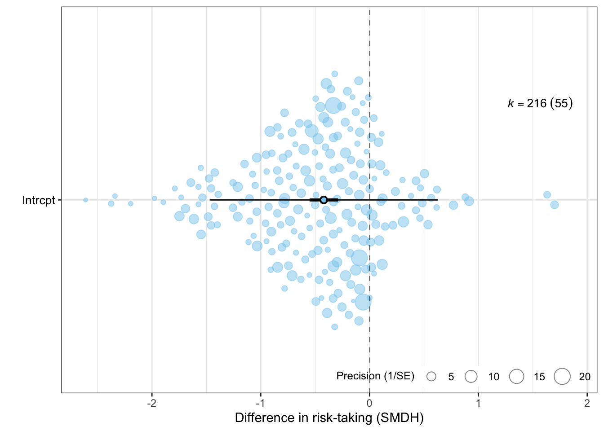
round(i2_ml(mod.overall.simple1), 2)## I2_Total I2_Study_ID I2_Study_ID/Obs_ID I2_Species2
## 85.66 20.74 50.30 14.633 Meta-regression SMD:Uni-moderator
3.1 Behaviour type
es2$Behaviour_type <- factor(
es2$Behaviour_type,
levels = sort(unique(es2$Behaviour_type), decreasing = TRUE)
)
mod.behav <- rma.mv(yi = yi, V = vi,
random = list(~1 | Study_ID / Obs_ID,
~1 | Species2
),
data = es2,
mods = ~ Behaviour_type -1,
test = "t",
sparse = TRUE)
summary(mod.behav)##
## Multivariate Meta-Analysis Model (k = 216; method: REML)
##
## logLik Deviance AIC BIC AICc
## -179.5909 359.1818 379.1818 412.6052 380.2929
##
## Variance Components:
##
## estim sqrt nlvls fixed factor
## sigma^2.1 0.0841 0.2900 55 no Study_ID
## sigma^2.2 0.1383 0.3719 216 no Study_ID/Obs_ID
## sigma^2.3 0.0402 0.2005 43 no Species2
##
## Test for Residual Heterogeneity:
## QE(df = 209) = 1014.7421, p-val < .0001
##
## Test of Moderators (coefficients 1:7):
## F(df1 = 7, df2 = 209) = 8.2760, p-val < .0001
##
## Model Results:
##
## estimate se tval df pval ci.lb
## Behaviour_typeVigilance -0.6398 0.2033 -3.1474 209 0.0019 -1.0406
## Behaviour_typeShoaling -0.2018 0.2490 -0.8104 209 0.4187 -0.6928
## Behaviour_typeNeophobia -0.7294 0.1896 -3.8475 209 0.0002 -1.1031
## Behaviour_typeForaging -0.7176 0.1392 -5.1543 209 <.0001 -0.9921
## Behaviour_typeExploration -0.1272 0.1399 -0.9092 209 0.3643 -0.4029
## Behaviour_typeEmergence -0.2310 0.1201 -1.9242 209 0.0557 -0.4677
## Behaviour_typeActivity -0.4587 0.0870 -5.2721 209 <.0001 -0.6303
## ci.ub
## Behaviour_typeVigilance -0.2391 **
## Behaviour_typeShoaling 0.2891
## Behaviour_typeNeophobia -0.3557 ***
## Behaviour_typeForaging -0.4432 ***
## Behaviour_typeExploration 0.1486
## Behaviour_typeEmergence 0.0057 .
## Behaviour_typeActivity -0.2872 ***
##
## ---
## Signif. codes: 0 '***' 0.001 '**' 0.01 '*' 0.05 '.' 0.1 ' ' 1behav <- orchard_plot(mod.behav, mod = "Behaviour_type",
xlab = "Difference in risk-taking behaviour (SMDH)",
group = "Study_ID",
angle = 0) +
scale_fill_manual(values = rep("#eea196", 7)) +
scale_color_manual(values = rep("#eea196", 7))
behav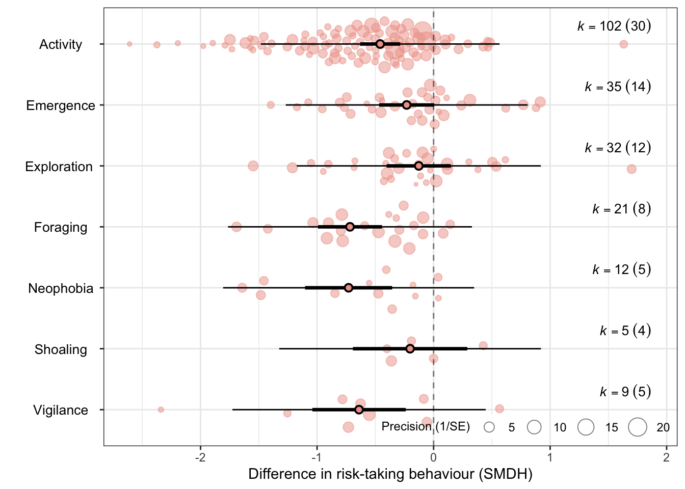
3.2 Sex
ses <- filter(es2, Sex != "N/A")
mod.sex <- rma.mv(yi = yi, V = vi,
random = list(~1 | Study_ID / Obs_ID,
~1 | Species2
),
data = ses,
mods = ~ Sex -1,
test = "t",
sparse = TRUE)
summary(mod.sex)##
## Multivariate Meta-Analysis Model (k = 215; method: REML)
##
## logLik Deviance AIC BIC AICc
## -188.7417 377.4835 389.4835 409.6230 389.8932
##
## Variance Components:
##
## estim sqrt nlvls fixed factor
## sigma^2.1 0.0634 0.2517 54 no Study_ID
## sigma^2.2 0.1671 0.4088 215 no Study_ID/Obs_ID
## sigma^2.3 0.0466 0.2158 42 no Species2
##
## Test for Residual Heterogeneity:
## QE(df = 212) = 1107.9804, p-val < .0001
##
## Test of Moderators (coefficients 1:3):
## F(df1 = 3, df2 = 212) = 14.3760, p-val < .0001
##
## Model Results:
##
## estimate se tval df pval ci.lb ci.ub
## SexFemale -0.3260 0.1252 -2.6046 212 0.0098 -0.5727 -0.0793 **
## SexMale -0.3828 0.1376 -2.7824 212 0.0059 -0.6540 -0.1116 **
## SexMixed -0.4661 0.0767 -6.0756 212 <.0001 -0.6173 -0.3149 ***
##
## ---
## Signif. codes: 0 '***' 0.001 '**' 0.01 '*' 0.05 '.' 0.1 ' ' 1sexplot <- orchard_plot(mod.sex, xlab = "Difference in risk-taking behaviour (SMDH)",
group = "Study_ID", mod = "Sex")
sexplot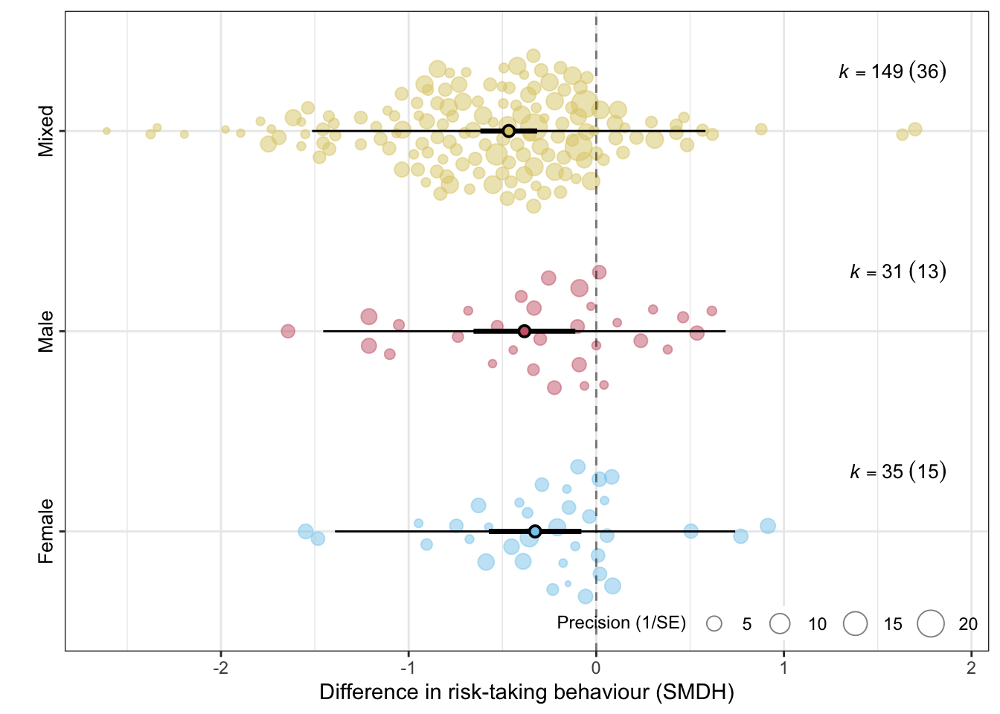
3.3 Real vs simulated predation
es2$Real_predator <- as.factor(es2$Real_predator)
mod.rp <- rma.mv(yi = yi, V = vi,
random = list(~1 | Study_ID / Obs_ID,
~1 | Species2
),
data = es2,
mods = ~ Real_predator -1,
test = "t",
sparse = TRUE)
summary(mod.rp)##
## Multivariate Meta-Analysis Model (k = 216; method: REML)
##
## logLik Deviance AIC BIC AICc
## -188.4361 376.8721 386.8721 403.7020 387.1606
##
## Variance Components:
##
## estim sqrt nlvls fixed factor
## sigma^2.1 0.0598 0.2445 55 no Study_ID
## sigma^2.2 0.1602 0.4002 216 no Study_ID/Obs_ID
## sigma^2.3 0.0491 0.2216 43 no Species2
##
## Test for Residual Heterogeneity:
## QE(df = 214) = 1013.6541, p-val < .0001
##
## Test of Moderators (coefficients 1:2):
## F(df1 = 2, df2 = 214) = 23.0951, p-val < .0001
##
## Model Results:
##
## estimate se tval df pval ci.lb ci.ub
## Real_predator0 -0.1745 0.1349 -1.2944 214 0.1969 -0.4404 0.0913
## Real_predator1 -0.4793 0.0708 -6.7742 214 <.0001 -0.6188 -0.3399 ***
##
## ---
## Signif. codes: 0 '***' 0.001 '**' 0.01 '*' 0.05 '.' 0.1 ' ' 1rp <- orchard_plot(mod.rp, mod = "Real_predator",
xlab = "Difference in risk-taking behaviour (SMDH)",
group = "Study_ID",
angle = 0) +
scale_fill_manual(values = rep("#eea196", 7)) +
scale_color_manual(values = rep("#eea196", 7))
rp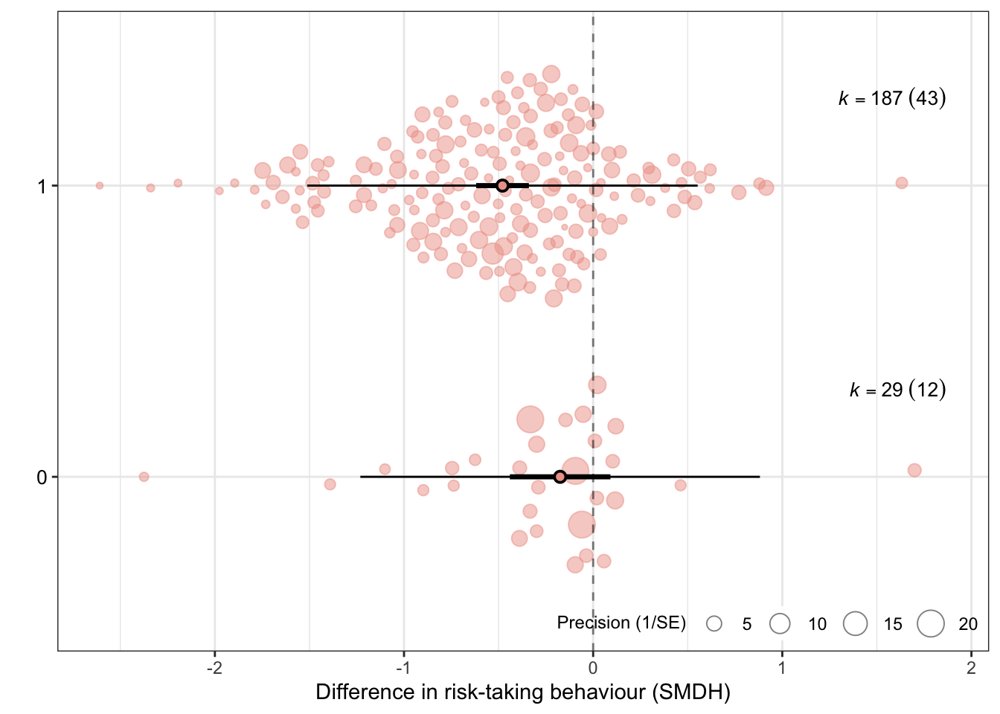
3.4 Low vs no predator as control
mod.ln <- rma.mv(yi = yi, V = vi,
random = list(~1 | Study_ID / Obs_ID,
~1 | Species2
),
data = es2,
mods = ~ Low_or_no_pred -1,
test = "t",
sparse = TRUE)
summary(mod.ln)##
## Multivariate Meta-Analysis Model (k = 216; method: REML)
##
## logLik Deviance AIC BIC AICc
## -189.9410 379.8820 389.8820 406.7119 390.1704
##
## Variance Components:
##
## estim sqrt nlvls fixed factor
## sigma^2.1 0.0731 0.2705 55 no Study_ID
## sigma^2.2 0.1610 0.4012 216 no Study_ID/Obs_ID
## sigma^2.3 0.0490 0.2214 43 no Species2
##
## Test for Residual Heterogeneity:
## QE(df = 214) = 1118.2198, p-val < .0001
##
## Test of Moderators (coefficients 1:2):
## F(df1 = 2, df2 = 214) = 19.7649, p-val < .0001
##
## Model Results:
##
## estimate se tval df pval ci.lb ci.ub
## Low_or_no_predLow -0.4931 0.0990 -4.9834 214 <.0001 -0.6882 -0.2981
## Low_or_no_predNo -0.3696 0.0835 -4.4288 214 <.0001 -0.5341 -0.2051
##
## Low_or_no_predLow ***
## Low_or_no_predNo ***
##
## ---
## Signif. codes: 0 '***' 0.001 '**' 0.01 '*' 0.05 '.' 0.1 ' ' 1ln <- orchard_plot(mod.ln, mod = "Low_or_no_pred",
xlab = "Difference in risk-taking behaviour (SMDH)",
group = "Study_ID",
angle = 0) +
scale_fill_manual(values = rep("#eea196", 7)) +
scale_color_manual(values = rep("#eea196", 7))
ln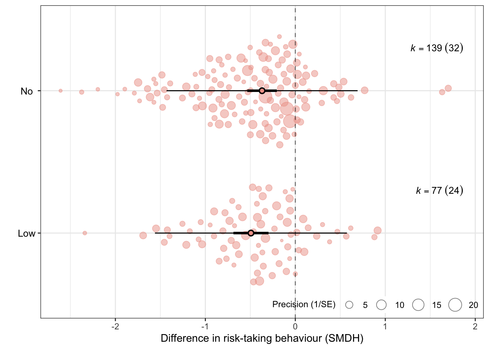
3.5 adult vs juvenille
es2$Adult <- factor(es2$Adult,
levels = c("Adult", "Juvenille", "Both"))
mod.aj <- rma.mv(yi = yi, V = vi,
random = list(~1 | Study_ID / Obs_ID,
~1 | Species2
),
data = es2,
mods = ~ Adult -1,
test = "t",
sparse = TRUE)
summary(mod.aj)##
## Multivariate Meta-Analysis Model (k = 216; method: REML)
##
## logLik Deviance AIC BIC AICc
## -188.6485 377.2970 389.2970 409.4648 389.7048
##
## Variance Components:
##
## estim sqrt nlvls fixed factor
## sigma^2.1 0.0658 0.2565 55 no Study_ID
## sigma^2.2 0.1677 0.4096 216 no Study_ID/Obs_ID
## sigma^2.3 0.0389 0.1972 43 no Species2
##
## Test for Residual Heterogeneity:
## QE(df = 213) = 1113.6049, p-val < .0001
##
## Test of Moderators (coefficients 1:3):
## F(df1 = 3, df2 = 213) = 14.8755, p-val < .0001
##
## Model Results:
##
## estimate se tval df pval ci.lb ci.ub
## AdultAdult -0.3430 0.0896 -3.8282 213 0.0002 -0.5197 -0.1664 ***
## AdultJuvenille -0.5340 0.1033 -5.1703 213 <.0001 -0.7376 -0.3304 ***
## AdultBoth -0.3777 0.1841 -2.0514 213 0.0415 -0.7406 -0.0148 *
##
## ---
## Signif. codes: 0 '***' 0.001 '**' 0.01 '*' 0.05 '.' 0.1 ' ' 1aj <- orchard_plot(mod.aj, mod = "Adult",
xlab = "Difference in risk-taking behaviour (SMDH)",
group = "Study_ID",
angle = 0) +
scale_fill_manual(values = rep("#eea196", 7)) +
scale_color_manual(values = rep("#eea196", 7))
aj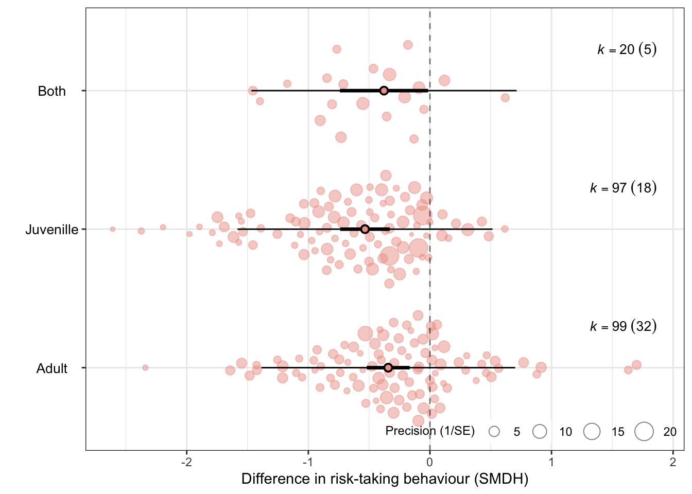
3.6 Comparision type
mod.com <- rma.mv(yi = yi, V = vi,
random = list(~1 | Study_ID / Obs_ID,
~1 | Species2
),
data = es2,
mods = ~ Comparison_type -1,
test = "t",
sparse = TRUE)
summary(mod.com)##
## Multivariate Meta-Analysis Model (k = 216; method: REML)
##
## logLik Deviance AIC BIC AICc
## -189.2687 378.5374 390.5374 410.7052 390.9452
##
## Variance Components:
##
## estim sqrt nlvls fixed factor
## sigma^2.1 0.0727 0.2697 55 no Study_ID
## sigma^2.2 0.1648 0.4060 216 no Study_ID/Obs_ID
## sigma^2.3 0.0431 0.2077 43 no Species2
##
## Test for Residual Heterogeneity:
## QE(df = 213) = 1117.4721, p-val < .0001
##
## Test of Moderators (coefficients 1:3):
## F(df1 = 3, df2 = 213) = 13.6248, p-val < .0001
##
## Model Results:
##
## estimate se tval df pval ci.lb ci.ub
## Comparison_typeCC -0.4194 0.0954 -4.3954 213 <.0001 -0.6075 -0.2313
## Comparison_typeWC -0.0956 0.3299 -0.2897 213 0.7723 -0.7459 0.5547
## Comparison_typeWW -0.4364 0.0883 -4.9404 213 <.0001 -0.6106 -0.2623
##
## Comparison_typeCC ***
## Comparison_typeWC
## Comparison_typeWW ***
##
## ---
## Signif. codes: 0 '***' 0.001 '**' 0.01 '*' 0.05 '.' 0.1 ' ' 1ct <- orchard_plot(mod.com, mod = "Comparison_type",
xlab = "Difference in risk-taking behaviour (SMDH)",
group = "Study_ID",
angle = 0) +
scale_fill_manual(values = rep("#eea196", 7)) +
scale_color_manual(values = rep("#eea196", 7))
ct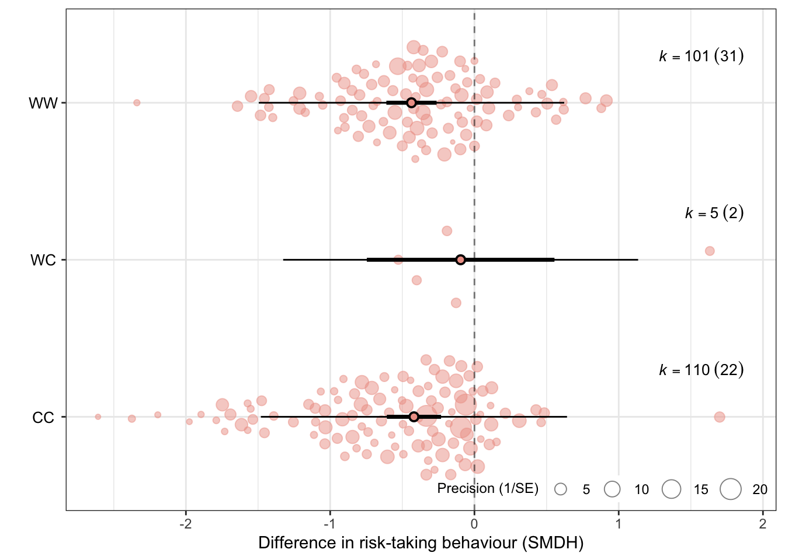
3.7 Class
s2 <- es2 %>%
mutate(Class = recode(Class,
"Actinopterygii" = "Ray-finned fishes",
"Amphibia" = "Amphibians",
"Mammalia" = "Mammals",
"Reptilia" = "Reptiles",
"Malacostraca" = "Crustaceans",
"Chondrichthyes" = "Cartilaginous fishes",
"Aves" = "Birds"
))
es2$Class <- factor(
es2$Class,
levels = sort(unique(es2$Class), decreasing = TRUE)
)
mod.class <- rma.mv(yi = yi, V = vi,
random = list(~1 | Study_ID / Obs_ID,
~1 | Species2
),
data = es2,
mods = ~ Class -1,
test = "t",
sparse = TRUE)
summary(mod.class)##
## Multivariate Meta-Analysis Model (k = 216; method: REML)
##
## logLik Deviance AIC BIC AICc
## -181.4595 362.9190 382.9190 416.3423 384.0301
##
## Variance Components:
##
## estim sqrt nlvls fixed factor
## sigma^2.1 0.0503 0.2243 55 no Study_ID
## sigma^2.2 0.1754 0.4188 216 no Study_ID/Obs_ID
## sigma^2.3 0.0269 0.1641 43 no Species2
##
## Test for Residual Heterogeneity:
## QE(df = 209) = 1092.8749, p-val < .0001
##
## Test of Moderators (coefficients 1:7):
## F(df1 = 7, df2 = 209) = 9.1615, p-val < .0001
##
## Model Results:
##
## estimate se tval df pval ci.lb ci.ub
## ClassReptilia -0.0927 0.2400 -0.3863 209 0.6997 -0.5658 0.3804
## ClassMammalia -0.6634 0.1528 -4.3429 209 <.0001 -0.9645 -0.3622
## ClassMalacostraca -0.3345 0.2728 -1.2265 209 0.2214 -0.8723 0.2032
## ClassChondrichthyes -0.1863 0.3055 -0.6098 209 0.5427 -0.7886 0.4160
## ClassAves -0.2041 0.3479 -0.5868 209 0.5580 -0.8899 0.4816
## ClassAmphibia -0.7001 0.1249 -5.6073 209 <.0001 -0.9463 -0.4540
## ClassActinopterygii -0.2960 0.0874 -3.3850 209 0.0009 -0.4684 -0.1236
##
## ClassReptilia
## ClassMammalia ***
## ClassMalacostraca
## ClassChondrichthyes
## ClassAves
## ClassAmphibia ***
## ClassActinopterygii ***
##
## ---
## Signif. codes: 0 '***' 0.001 '**' 0.01 '*' 0.05 '.' 0.1 ' ' 1class <- orchard_plot(mod.class, mod = "Class", xlab = "Difference in risk-taking (SMDH)", group = "Study_ID",
angle = 0) +
scale_fill_manual(values = rep("#eea196", 7)) +
scale_color_manual(values = rep("#eea196", 7))
class 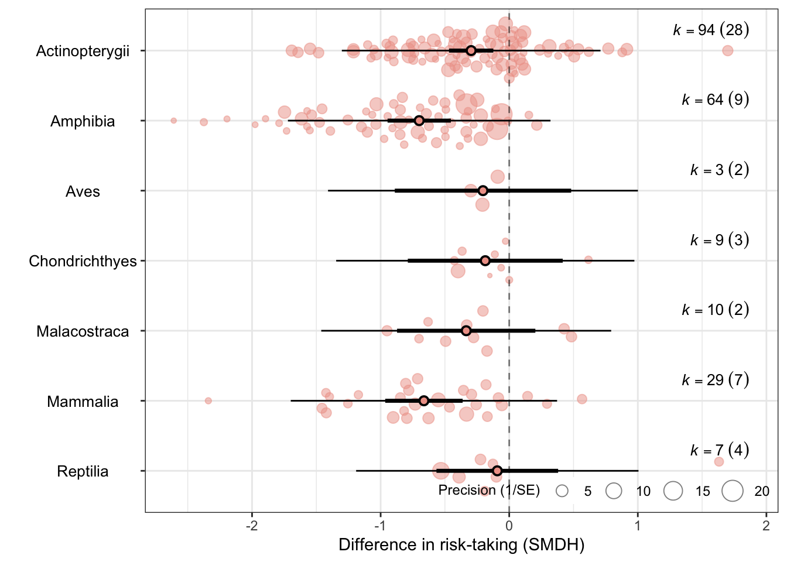
4 Meta-analysis lnCVR
mod.overall_cv <- rma.mv(yi = yi, V = vi,
random = list(~1 | Study_ID / Obs_ID),
data = cv,
test = "t",
sparse = TRUE)
summary(mod.overall_cv)##
## Multivariate Meta-Analysis Model (k = 182; method: REML)
##
## logLik Deviance AIC BIC AICc
## -180.9426 361.8852 367.8852 377.4807 368.0208
##
## Variance Components:
##
## estim sqrt nlvls fixed factor
## sigma^2.1 0.0642 0.2533 46 no Study_ID
## sigma^2.2 0.1909 0.4369 182 no Study_ID/Obs_ID
##
## Test for Heterogeneity:
## Q(df = 181) = 829.1036, p-val < .0001
##
## Model Results:
##
## estimate se tval df pval ci.lb ci.ub
## 0.1555 0.0594 2.6177 181 0.0096 0.0383 0.2727 **
##
## ---
## Signif. codes: 0 '***' 0.001 '**' 0.01 '*' 0.05 '.' 0.1 ' ' 1overall_cv <- orchard_plot(mod.overall_cv, xlab = "Difference in heterogeneity (lnCVR)", group = "Study_ID",
angle = 0)
overall_cv <- overall_cv + scale_fill_manual(values = "#989aae") + scale_color_manual(values = "#989aae")
overall_cv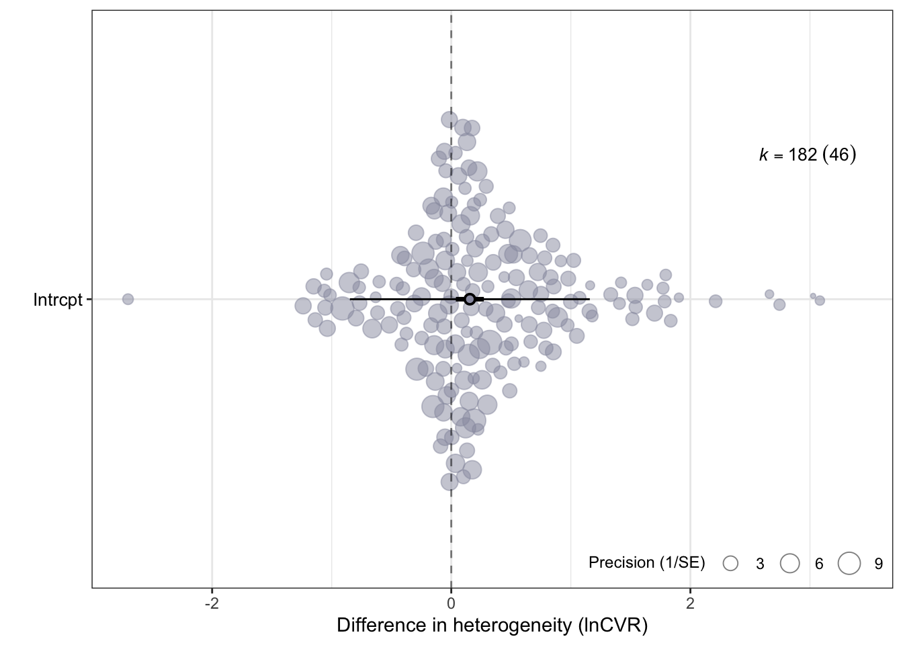
5 Meta-regression lnCVR:Uni-moderator
5.1 Behaviour type lnCVR
cv$Behaviour_type <- factor(
cv$Behaviour_type,
levels = sort(unique(cv$Behaviour_type), decreasing = TRUE)
)
mod.behav_cv <- rma.mv(yi = yi, V = vi,
random = list(~1 | Study_ID / Obs_ID),
data = cv,
mods = ~ Behaviour_type -1,
test = "t",
sparse = TRUE)
summary(mod.behav_cv)##
## Multivariate Meta-Analysis Model (k = 182; method: REML)
##
## logLik Deviance AIC BIC AICc
## -173.1453 346.2907 364.2907 392.7737 365.3816
##
## Variance Components:
##
## estim sqrt nlvls fixed factor
## sigma^2.1 0.0611 0.2472 46 no Study_ID
## sigma^2.2 0.1885 0.4341 182 no Study_ID/Obs_ID
##
## Test for Residual Heterogeneity:
## QE(df = 175) = 798.7743, p-val < .0001
##
## Test of Moderators (coefficients 1:7):
## F(df1 = 7, df2 = 175) = 2.3790, p-val = 0.0239
##
## Model Results:
##
## estimate se tval df pval ci.lb
## Behaviour_typeVigilance -0.2626 0.2117 -1.2405 175 0.2164 -0.6803
## Behaviour_typeShoaling 0.7461 0.3506 2.1282 175 0.0347 0.0542
## Behaviour_typeNeophobia -0.0084 0.2295 -0.0367 175 0.9708 -0.4614
## Behaviour_typeForaging 0.2487 0.1439 1.7281 175 0.0857 -0.0353
## Behaviour_typeExploration 0.0169 0.1708 0.0993 175 0.9210 -0.3201
## Behaviour_typeEmergence 0.2396 0.1208 1.9842 175 0.0488 0.0013
## Behaviour_typeActivity 0.1696 0.0811 2.0911 175 0.0380 0.0095
## ci.ub
## Behaviour_typeVigilance 0.1552
## Behaviour_typeShoaling 1.4380 *
## Behaviour_typeNeophobia 0.4446
## Behaviour_typeForaging 0.5328 .
## Behaviour_typeExploration 0.3540
## Behaviour_typeEmergence 0.4780 *
## Behaviour_typeActivity 0.3297 *
##
## ---
## Signif. codes: 0 '***' 0.001 '**' 0.01 '*' 0.05 '.' 0.1 ' ' 1behav.cv <- orchard_plot(mod.behav_cv, mod = "Behaviour_type",
xlab = "Difference in heterogeneity (lnCVR)",
group = "Study_ID",
angle = 0)
behav.cv <- behav.cv +
scale_fill_manual(values = rep("#989aae", 7)) +
scale_color_manual(values = rep("#989aae", 7))
behav.cv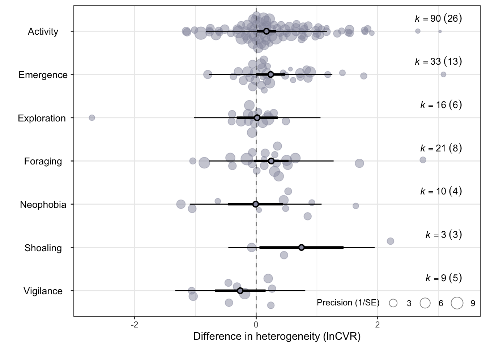
5.2 Sex lnCVR
ses_cv <- filter(cv, Sex != "N/A")
mod.sex.cv <- rma.mv(yi = yi, V = vi,
random = list(~1 | Study_ID / Obs_ID),
data = ses_cv,
mods = ~ Sex -1,
test = "t",
sparse = TRUE)
summary(mod.sex.cv) ##
## Multivariate Meta-Analysis Model (k = 182; method: REML)
##
## logLik Deviance AIC BIC AICc
## -179.4569 358.9137 368.9137 384.8506 369.2605
##
## Variance Components:
##
## estim sqrt nlvls fixed factor
## sigma^2.1 0.0650 0.2549 46 no Study_ID
## sigma^2.2 0.1948 0.4414 182 no Study_ID/Obs_ID
##
## Test for Residual Heterogeneity:
## QE(df = 179) = 816.4270, p-val < .0001
##
## Test of Moderators (coefficients 1:3):
## F(df1 = 3, df2 = 179) = 2.4972, p-val = 0.0613
##
## Model Results:
##
## estimate se tval df pval ci.lb ci.ub
## SexFemale 0.0605 0.1332 0.4539 179 0.6505 -0.2024 0.3233
## SexMale 0.1902 0.1397 1.3612 179 0.1752 -0.0855 0.4658
## SexMixed 0.1723 0.0728 2.3650 179 0.0191 0.0285 0.3160 *
##
## ---
## Signif. codes: 0 '***' 0.001 '**' 0.01 '*' 0.05 '.' 0.1 ' ' 1behav.cv <- orchard_plot(mod.sex.cv, mod = "Sex",
xlab = "Difference in heterogeneity (lnCVR)",
group = "Study_ID",
angle = 0)
behav.cv <- behav.cv +
scale_fill_manual(values = rep("#989aae", 7)) +
scale_color_manual(values = rep("#989aae", 7))
behav.cv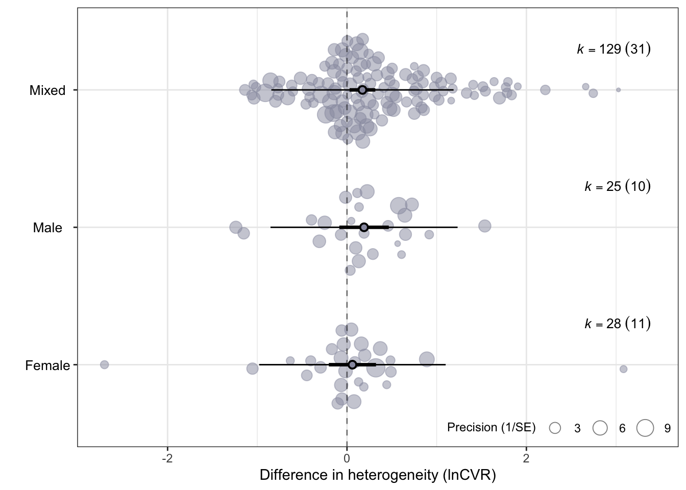
5.3 Real vs simulated predation lnCVR
cv$Real_predator <- as.factor(cv$Real_predator)
mod.rp.cv <- rma.mv(yi = yi, V = vi,
random = list(~1 | Study_ID / Obs_ID),
data = cv,
mods = ~ Real_predator -1,
test = "t",
sparse = TRUE)
summary(mod.rp.cv)##
## Multivariate Meta-Analysis Model (k = 182; method: REML)
##
## logLik Deviance AIC BIC AICc
## -179.4586 358.9173 366.9173 379.6891 367.1458
##
## Variance Components:
##
## estim sqrt nlvls fixed factor
## sigma^2.1 0.0602 0.2453 46 no Study_ID
## sigma^2.2 0.1915 0.4376 182 no Study_ID/Obs_ID
##
## Test for Residual Heterogeneity:
## QE(df = 180) = 787.5624, p-val < .0001
##
## Test of Moderators (coefficients 1:2):
## F(df1 = 2, df2 = 180) = 4.4817, p-val = 0.0126
##
## Model Results:
##
## estimate se tval df pval ci.lb ci.ub
## Real_predator0 -0.0121 0.1366 -0.0886 180 0.9295 -0.2816 0.2574
## Real_predator1 0.1940 0.0648 2.9926 180 0.0032 0.0661 0.3219 **
##
## ---
## Signif. codes: 0 '***' 0.001 '**' 0.01 '*' 0.05 '.' 0.1 ' ' 1rp.cv <- orchard_plot(mod.rp.cv, mod = "Real_predator",
xlab = "Difference in heterogeneity (lnCVR)",
group = "Study_ID",
angle = 0) +
scale_fill_manual(values = rep("#989aae", 7)) +
scale_color_manual(values = rep("#989aae", 7))
rp.cv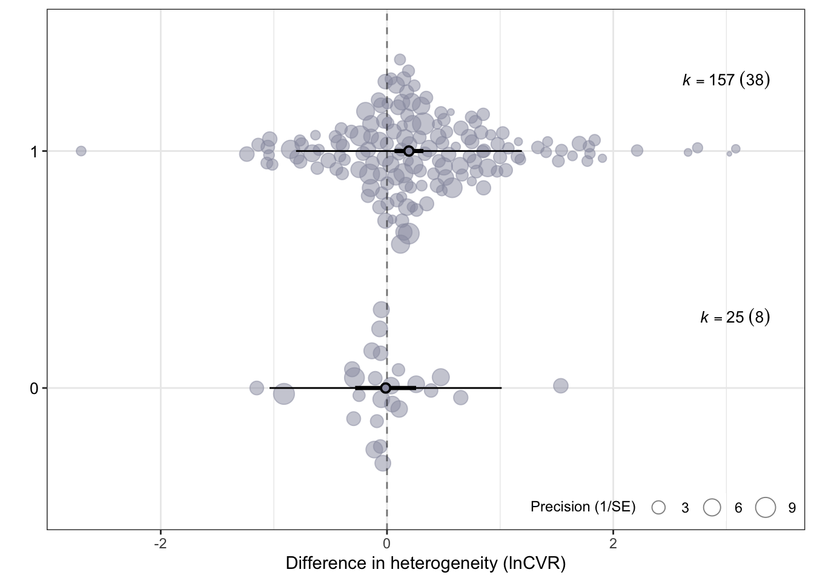
5.4 Low vs no predator as control lnCVR
mod.ln.cv <- rma.mv(yi = yi, V = vi,
random = list(~1 | Study_ID / Obs_ID),
data = cv,
mods = ~ Low_or_no_pred -1,
test = "t",
sparse = TRUE)
summary(mod.ln.cv)##
## Multivariate Meta-Analysis Model (k = 182; method: REML)
##
## logLik Deviance AIC BIC AICc
## -180.0931 360.1862 368.1862 380.9580 368.4147
##
## Variance Components:
##
## estim sqrt nlvls fixed factor
## sigma^2.1 0.0651 0.2552 46 no Study_ID
## sigma^2.2 0.1921 0.4383 182 no Study_ID/Obs_ID
##
## Test for Residual Heterogeneity:
## QE(df = 180) = 818.9945, p-val < .0001
##
## Test of Moderators (coefficients 1:2):
## F(df1 = 2, df2 = 180) = 3.5866, p-val = 0.0297
##
## Model Results:
##
## estimate se tval df pval ci.lb ci.ub
## Low_or_no_predLow 0.2021 0.0958 2.1083 180 0.0364 0.0129 0.3912 *
## Low_or_no_predNo 0.1266 0.0756 1.6741 180 0.0958 -0.0226 0.2758 .
##
## ---
## Signif. codes: 0 '***' 0.001 '**' 0.01 '*' 0.05 '.' 0.1 ' ' 1ln.cv <- orchard_plot(mod.ln.cv, mod = "Low_or_no_pred",
xlab = "Difference in heterogeneity (lnCVR)",
group = "Study_ID",
angle = 0) +
scale_fill_manual(values = rep("#989aae", 7)) +
scale_color_manual(values = rep("#989aae", 7))
ln.cv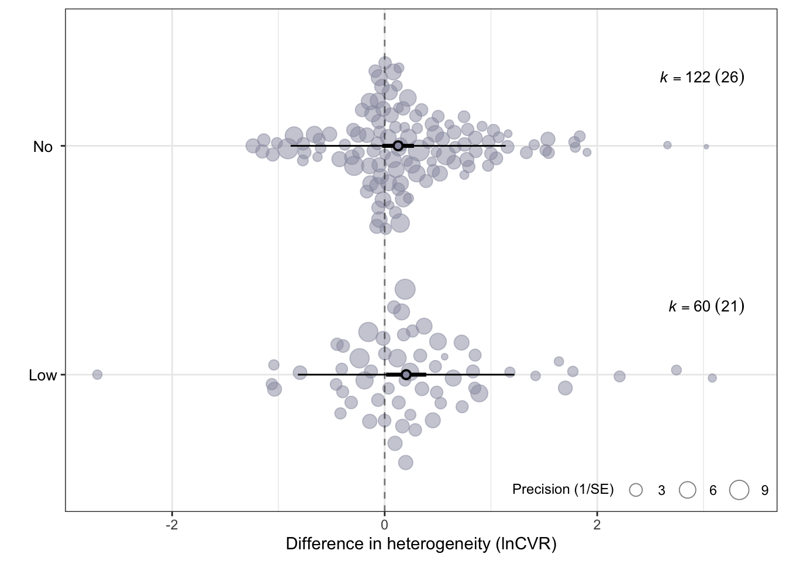
5.5 Adult vs juvenille lnCVR
mod.ln.cv <- rma.mv(yi = yi, V = vi,
random = list(~1 | Study_ID / Obs_ID),
data = cv,
mods = ~ Low_or_no_pred -1,
test = "t",
sparse = TRUE)
summary(mod.ln.cv)##
## Multivariate Meta-Analysis Model (k = 182; method: REML)
##
## logLik Deviance AIC BIC AICc
## -180.0931 360.1862 368.1862 380.9580 368.4147
##
## Variance Components:
##
## estim sqrt nlvls fixed factor
## sigma^2.1 0.0651 0.2552 46 no Study_ID
## sigma^2.2 0.1921 0.4383 182 no Study_ID/Obs_ID
##
## Test for Residual Heterogeneity:
## QE(df = 180) = 818.9945, p-val < .0001
##
## Test of Moderators (coefficients 1:2):
## F(df1 = 2, df2 = 180) = 3.5866, p-val = 0.0297
##
## Model Results:
##
## estimate se tval df pval ci.lb ci.ub
## Low_or_no_predLow 0.2021 0.0958 2.1083 180 0.0364 0.0129 0.3912 *
## Low_or_no_predNo 0.1266 0.0756 1.6741 180 0.0958 -0.0226 0.2758 .
##
## ---
## Signif. codes: 0 '***' 0.001 '**' 0.01 '*' 0.05 '.' 0.1 ' ' 1ln.cv <- orchard_plot(mod.ln.cv, mod = "Low_or_no_pred",
xlab = "Difference in heterogeneity (lnCVR)",
group = "Study_ID",
angle = 0) +
scale_fill_manual(values = rep("#989aae", 7)) +
scale_color_manual(values = rep("#989aae", 7))
ln.cv
5.6 Comparison type lnCVR
mod.com.cv <- rma.mv(yi = yi, V = vi,
random = list(~1 | Study_ID / Obs_ID),
data = cv,
mods = ~ Comparison_type -1,
test = "t",
sparse = TRUE)
summary(mod.com.cv)##
## Multivariate Meta-Analysis Model (k = 182; method: REML)
##
## logLik Deviance AIC BIC AICc
## -179.4392 358.8784 368.8784 384.8153 369.2252
##
## Variance Components:
##
## estim sqrt nlvls fixed factor
## sigma^2.1 0.0670 0.2589 46 no Study_ID
## sigma^2.2 0.1933 0.4397 182 no Study_ID/Obs_ID
##
## Test for Residual Heterogeneity:
## QE(df = 179) = 820.4556, p-val < .0001
##
## Test of Moderators (coefficients 1:3):
## F(df1 = 3, df2 = 179) = 2.3772, p-val = 0.0715
##
## Model Results:
##
## estimate se tval df pval ci.lb ci.ub
## Comparison_typeCC 0.1890 0.0905 2.0892 179 0.0381 0.0105 0.3676 *
## Comparison_typeWC -0.0115 0.3131 -0.0367 179 0.9708 -0.6294 0.6064
## Comparison_typeWW 0.1385 0.0833 1.6630 179 0.0981 -0.0258 0.3029 .
##
## ---
## Signif. codes: 0 '***' 0.001 '**' 0.01 '*' 0.05 '.' 0.1 ' ' 1ct.cv <- orchard_plot(mod.com.cv, mod = "Comparison_type",
xlab = "Difference in heterogeneity (lnCVR)",
group = "Study_ID",
angle = 0) +
scale_fill_manual(values = rep("#989aae", 7)) +
scale_color_manual(values = rep("#989aae", 7))
ct.cv 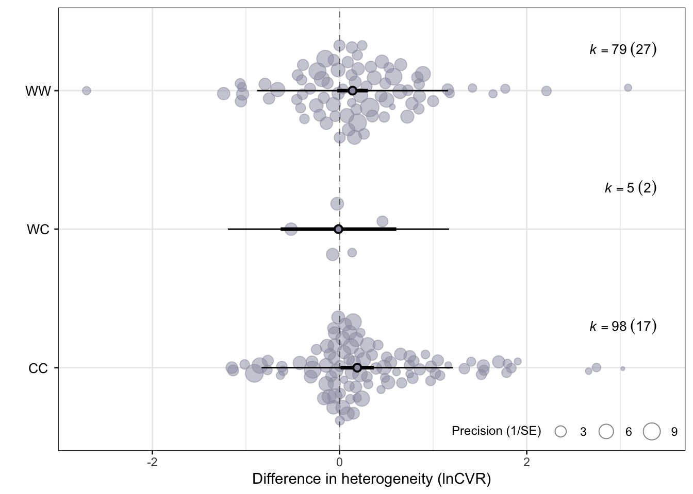
5.7 Class lnCVR
cv <- cv %>%
mutate(Class = recode(Class,
"Actinopterygii" = "Ray-finned fishes",
"Amphibia" = "Amphibians",
"Mammalia" = "Mammals",
"Reptilia" = "Reptiles",
"Malacostraca" = "Crustaceans",
"Chondrichthyes" = "Cartilaginous fishes",
"Aves" = "Birds"
))
cv$Class <- factor(
cv$Class,
levels = sort(unique(cv$Class), decreasing = TRUE)
)
mod.class.cv <- rma.mv(yi = yi, V = vi,
random = list(~1 | Study_ID / Obs_ID),
data = cv,
mods = ~ Class -1,
test = "t",
sparse = TRUE)
summary(mod.class.cv)##
## Multivariate Meta-Analysis Model (k = 182; method: REML)
##
## logLik Deviance AIC BIC AICc
## -174.3302 348.6605 366.6605 395.1435 367.7514
##
## Variance Components:
##
## estim sqrt nlvls fixed factor
## sigma^2.1 0.0630 0.2510 46 no Study_ID
## sigma^2.2 0.1944 0.4409 182 no Study_ID/Obs_ID
##
## Test for Residual Heterogeneity:
## QE(df = 175) = 800.5494, p-val < .0001
##
## Test of Moderators (coefficients 1:7):
## F(df1 = 7, df2 = 175) = 1.8108, p-val = 0.0878
##
## Model Results:
##
## estimate se tval df pval ci.lb
## ClassReptiles -0.2244 0.2539 -0.8836 175 0.3781 -0.7256
## ClassRay-finned fishes 0.1702 0.0874 1.9485 175 0.0530 -0.0022
## ClassMammals 0.1072 0.1517 0.7065 175 0.4808 -0.1923
## ClassCrustaceans -0.0035 0.2551 -0.0136 175 0.9891 -0.5069
## ClassCartilaginous fishes -0.0530 0.2577 -0.2058 175 0.8372 -0.5615
## ClassBirds 0.5083 0.4200 1.2102 175 0.2278 -0.3206
## ClassAmphibians 0.3243 0.1314 2.4682 175 0.0145 0.0650
## ci.ub
## ClassReptiles 0.2768
## ClassRay-finned fishes 0.3427 .
## ClassMammals 0.4066
## ClassCrustaceans 0.5000
## ClassCartilaginous fishes 0.4555
## ClassBirds 1.3372
## ClassAmphibians 0.5837 *
##
## ---
## Signif. codes: 0 '***' 0.001 '**' 0.01 '*' 0.05 '.' 0.1 ' ' 1class.cv <- orchard_plot(mod.class.cv, mod = "Class", xlab = "Heterogeneity in risk-taking (lnCVR)", group = "Study_ID",
angle = 0) +
scale_fill_manual(values = rep("#989aae", 7)) +
scale_color_manual(values = rep("#989aae", 7))
class.cv 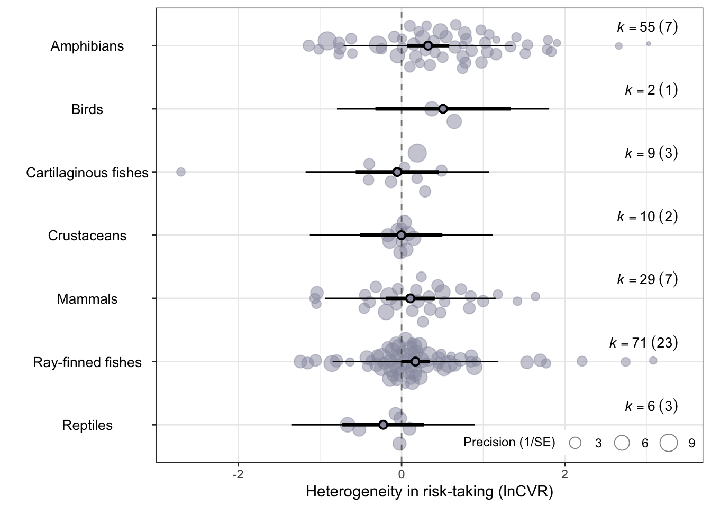
6 Publication bias
6.1 Decline effect for difference
mod.mad <- rma.mv(yi = yi, V = vi,
random = list(~1 | Study_ID / Obs_ID,
~1 | Species2
),
data = es2,
mods = ~ Year,
test = "t",
sparse = TRUE)
summary(mod.mad) ##
## Multivariate Meta-Analysis Model (k = 216; method: REML)
##
## logLik Deviance AIC BIC AICc
## -189.5440 379.0880 389.0880 405.9179 389.3765
##
## Variance Components:
##
## estim sqrt nlvls fixed factor
## sigma^2.1 0.0648 0.2545 55 no Study_ID
## sigma^2.2 0.1657 0.4070 216 no Study_ID/Obs_ID
## sigma^2.3 0.0426 0.2064 43 no Species2
##
## Test for Residual Heterogeneity:
## QE(df = 214) = 1117.7665, p-val < .0001
##
## Test of Moderators (coefficient 2):
## F(df1 = 1, df2 = 214) = 1.6146, p-val = 0.2052
##
## Model Results:
##
## estimate se tval df pval ci.lb ci.ub
## intrcpt -20.3031 15.6468 -1.2976 214 0.1958 -51.1447 10.5386
## Year 0.0099 0.0078 1.2707 214 0.2052 -0.0054 0.0252
##
## ---
## Signif. codes: 0 '***' 0.001 '**' 0.01 '*' 0.05 '.' 0.1 ' ' 16.2 Eggers regression + funnel
es2$effectN <- (4* es2$n_control * es2$n_exp) / (es2$n_control + es2$n_exp)
es2$sqeffectN <- sqrt(1/es2$effectN)
#' [EJL Changed:]
mod.egg <- rma.mv(yi = yi, V = vi,
random = list(~1 | Study_ID / Obs_ID, #' [EJL changed]
#~1 | Species, # phylo effect
~1 | Species2#, # non-phylo effect
), #' [EJL Change]
# ~1 | Species, # phylo effect
# ~1 | Species2),
data = es2,
mods = ~ sqeffectN,
test = "t",
sparse = TRUE)
summary(mod.egg)##
## Multivariate Meta-Analysis Model (k = 216; method: REML)
##
## logLik Deviance AIC BIC AICc
## -189.5924 379.1849 389.1849 406.0148 389.4733
##
## Variance Components:
##
## estim sqrt nlvls fixed factor
## sigma^2.1 0.0627 0.2504 55 no Study_ID
## sigma^2.2 0.1622 0.4028 216 no Study_ID/Obs_ID
## sigma^2.3 0.0561 0.2368 43 no Species2
##
## Test for Residual Heterogeneity:
## QE(df = 214) = 1094.4716, p-val < .0001
##
## Test of Moderators (coefficient 2):
## F(df1 = 1, df2 = 214) = 1.6311, p-val = 0.2029
##
## Model Results:
##
## estimate se tval df pval ci.lb ci.ub
## intrcpt -0.2538 0.1482 -1.7126 214 0.0882 -0.5459 0.0383 .
## sqeffectN -1.2963 1.0150 -1.2771 214 0.2029 -3.2970 0.7044
##
## ---
## Signif. codes: 0 '***' 0.001 '**' 0.01 '*' 0.05 '.' 0.1 ' ' 1funnel(mod.egg,
yaxis="seinv",
xlab = "Standardized residuals",
ylab = "Precision (inverse of SE)",
)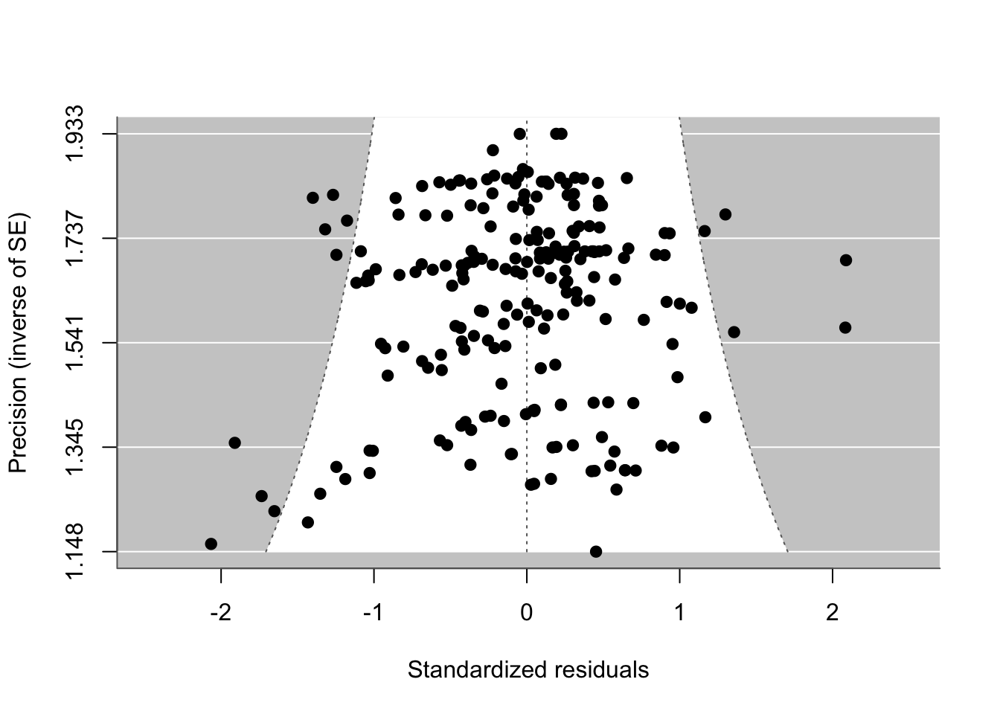
6.3 Leave one out
dat <- es2 %>%
mutate(leave_out = paste(First_author, Year, sep = "_"))
dat$leave_out <- as.factor(dat$leave_out)
LeaveOneOut_effectsize <- list()
for (i in 1:length(levels(dat$leave_out))) {
temp_dat <- dat %>%
dplyr::filter(leave_out != levels(dat$leave_out)[i])
LeaveOneOut_effectsize[[i]] <- rma.mv(yi = yi,
V = vi,
random = list(~1 | Study_ID / Obs_ID,
~1 | Species2),
test = "t",
method = "REML",
sparse = TRUE,
data = temp_dat)
}
# function for extracting est, ci.lb, and ci.ub from all models
est.func <- function(model) {
df <- data.frame(est = model$b, lower = model$ci.lb, upper = model$ci.ub)
return(df)
}
# form data frame
MA_oneout <- lapply(LeaveOneOut_effectsize, function(x) est.func(x)) %>%
bind_rows() %>%
mutate(left_out = levels(dat$leave_out))
# preserve factor order for ggplot
MA_oneout$left_out <- factor(MA_oneout$left_out, levels = MA_oneout$left_out)
# save the runs
saveRDS(MA_oneout, here("R", "MA_oneout.RDS"))
# plotting
leaveoneout <- ggplot(MA_oneout) +
geom_hline(yintercept = 0, lty = 2, lwd = 1) +
geom_hline(yintercept = mod.overall.simple1$ci.lb, lty = 3, lwd = 0.75, colour = "black") +
geom_hline(yintercept = mod.overall.simple1$b, lty = 1, lwd = 0.75, colour = "black") +
geom_hline(yintercept = mod.overall.simple1$ci.ub, lty = 3, lwd = 0.75, colour = "black") +
geom_pointrange(aes(x = left_out, y = est, ymin = lower, ymax = upper)) +
xlab("Study left out") +
ylab("Hedge' g") +
coord_flip() +
theme_bw() +
theme(
panel.grid.major = element_blank(),
panel.grid.minor = element_blank(),
axis.text.y = element_text(size = 6)
)
leaveoneout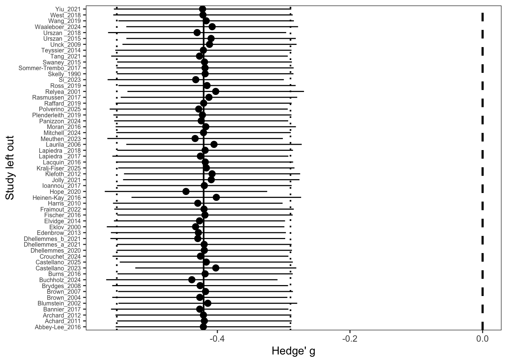
6.4 Sensivity analysis for lnCVR as representative sample
sens.es <- filter(es2, Mean_control > 0)
sens.es <- filter(sens.es, Mean_exp > 0)
sens.es <- filter(sens.es, Can_be_negitive != "Yes")
sens.es$Obs_ID <- factor(1:nrow(sens.es))
mod.behav.sens <- rma.mv(yi = yi, V = vi,
random = list(~1 | Study_ID / Obs_ID,
~1 | Species2
),
data = sens.es,
test = "t",
sparse = TRUE)
summary(mod.behav.sens)##
## Multivariate Meta-Analysis Model (k = 182; method: REML)
##
## logLik Deviance AIC BIC AICc
## -154.7187 309.4374 317.4374 330.2314 317.6647
##
## Variance Components:
##
## estim sqrt nlvls fixed factor
## sigma^2.1 0.0765 0.2766 46 no Study_ID
## sigma^2.2 0.1522 0.3901 182 no Study_ID/Obs_ID
## sigma^2.3 0.0041 0.0636 38 no Species2
##
## Test for Heterogeneity:
## Q(df = 181) = 806.3474, p-val < .0001
##
## Model Results:
##
## estimate se tval df pval ci.lb ci.ub
## -0.4067 0.0605 -6.7179 181 <.0001 -0.5262 -0.2873 ***
##
## ---
## Signif. codes: 0 '***' 0.001 '**' 0.01 '*' 0.05 '.' 0.1 ' ' 16.5 Sensivity analysis for lnCVR as representative sample
sens.es.pca <- filter(es2, Metric != "PCA values")
mod.behav.sens.pca <- rma.mv(yi = yi, V = vi,
random = list(~1 | Study_ID / Obs_ID,
~1 | Species2
),
data = sens.es.pca,
test = "t",
sparse = TRUE)
summary(mod.behav.sens.pca)##
## Multivariate Meta-Analysis Model (k = 202; method: REML)
##
## logLik Deviance AIC BIC AICc
## -170.3407 340.6814 348.6814 361.8946 348.8854
##
## Variance Components:
##
## estim sqrt nlvls fixed factor
## sigma^2.1 0.0559 0.2363 51 no Study_ID
## sigma^2.2 0.1516 0.3894 202 no Study_ID/Obs_ID
## sigma^2.3 0.0300 0.1733 41 no Species2
##
## Test for Heterogeneity:
## Q(df = 201) = 989.6059, p-val < .0001
##
## Model Results:
##
## estimate se tval df pval ci.lb ci.ub
## -0.4264 0.0614 -6.9456 201 <.0001 -0.5475 -0.3054 ***
##
## ---
## Signif. codes: 0 '***' 0.001 '**' 0.01 '*' 0.05 '.' 0.1 ' ' 17 R Session Information
library(sessioninfo)
session_info()## ─ Session info ───────────────────────────────────────────────────────────────
## setting value
## version R version 4.4.2 (2024-10-31)
## os macOS Sequoia 15.6.1
## system aarch64, darwin20
## ui X11
## language (EN)
## collate en_US.UTF-8
## ctype en_US.UTF-8
## tz Australia/Sydney
## date 2026-09-29
## pandoc 3.9.0.2 @ /opt/homebrew/bin/ (via rmarkdown)
## quarto 1.5.57 @ /Applications/RStudio.app/Contents/Resources/app/quarto/bin/quarto
##
## ─ Packages ───────────────────────────────────────────────────────────────────
## package * version date (UTC) lib source
## ape * 5.8-1 2024-12-16 [1] CRAN (R 4.4.1)
## backports 1.5.0 2024-05-23 [1] CRAN (R 4.4.1)
## beeswarm 0.4.0 2021-06-01 [1] CRAN (R 4.4.1)
## BiocManager 1.30.27 2025-11-14 [1] CRAN (R 4.4.3)
## broom * 1.0.12 2026-01-27 [1] CRAN (R 4.4.3)
## bslib 0.10.0 2026-01-26 [1] CRAN (R 4.4.3)
## cachem 1.1.0 2024-05-16 [1] CRAN (R 4.4.0)
## cli 3.6.5 2025-04-23 [1] CRAN (R 4.4.1)
## coda 0.19-4.1 2024-01-31 [1] CRAN (R 4.4.1)
## codetools 0.2-20 2024-03-31 [1] CRAN (R 4.4.2)
## cowplot * 1.2.0 2025-07-07 [1] CRAN (R 4.4.1)
## crayon 1.5.3 2024-06-20 [1] CRAN (R 4.4.0)
## crul 1.6.0 2025-07-23 [1] CRAN (R 4.4.1)
## curl 7.0.0 2025-08-19 [1] CRAN (R 4.4.1)
## data.table * 1.18.2.1 2026-01-27 [1] CRAN (R 4.4.3)
## devtools * 2.5.0 2026-03-14 [1] CRAN (R 4.4.3)
## digest 0.6.39 2025-11-19 [1] CRAN (R 4.4.3)
## dplyr * 1.2.0 2026-02-03 [1] CRAN (R 4.4.3)
## ellipsis 0.3.2 2021-04-29 [1] CRAN (R 4.4.1)
## emmeans * 2.0.2 2026-03-05 [1] CRAN (R 4.4.3)
## estimability 1.5.1 2024-05-12 [1] CRAN (R 4.4.1)
## evaluate 1.0.5 2025-08-27 [1] CRAN (R 4.4.1)
## farver 2.1.2 2024-05-13 [1] CRAN (R 4.4.1)
## fastmap 1.2.0 2024-05-15 [1] CRAN (R 4.4.0)
## forcats * 1.0.1 2025-09-25 [1] CRAN (R 4.4.1)
## fs 1.6.7 2026-03-06 [1] CRAN (R 4.4.3)
## generics 0.1.4 2025-05-09 [1] CRAN (R 4.4.1)
## ggbeeswarm 0.7.3 2025-11-29 [1] CRAN (R 4.4.3)
## ggplot2 * 4.0.2 2026-02-03 [1] CRAN (R 4.4.3)
## glue 1.8.0 2024-09-30 [1] CRAN (R 4.4.1)
## gridExtra 2.3 2017-09-09 [1] CRAN (R 4.4.1)
## gtable 0.3.6 2024-10-25 [1] CRAN (R 4.4.1)
## here * 1.0.2 2025-09-15 [1] CRAN (R 4.4.1)
## hms 1.1.4 2025-10-17 [1] CRAN (R 4.4.1)
## htmltools 0.5.9 2025-12-04 [1] CRAN (R 4.4.3)
## httpcode 0.3.0 2020-04-10 [1] CRAN (R 4.4.1)
## jquerylib 0.1.4 2021-04-26 [1] CRAN (R 4.4.0)
## jsonlite 2.0.0 2025-03-27 [1] CRAN (R 4.4.1)
## kableExtra * 1.4.0 2024-01-24 [1] CRAN (R 4.4.0)
## knitr 1.51 2025-12-20 [1] CRAN (R 4.4.3)
## labeling 0.4.3 2023-08-29 [1] CRAN (R 4.4.1)
## latex2exp 0.9.8 2026-01-09 [1] CRAN (R 4.4.3)
## lattice 0.22-9 2026-02-09 [1] CRAN (R 4.4.3)
## lifecycle 1.0.5 2026-01-08 [1] CRAN (R 4.4.3)
## lubridate * 1.9.5 2026-02-04 [1] CRAN (R 4.4.3)
## magrittr * 2.0.4 2025-09-12 [1] CRAN (R 4.4.1)
## MASS * 7.3-65 2025-02-28 [1] CRAN (R 4.4.1)
## mathjaxr 2.0-0 2025-12-01 [1] CRAN (R 4.4.3)
## Matrix * 1.7-5 2026-03-21 [1] CRAN (R 4.4.3)
## matrixcalc * 1.0-6 2022-09-14 [1] CRAN (R 4.4.1)
## memoise 2.0.1 2021-11-26 [1] CRAN (R 4.4.0)
## metadat * 1.4-0 2025-02-04 [1] CRAN (R 4.4.1)
## metafor * 4.8-0 2025-01-28 [1] CRAN (R 4.4.1)
## multcomp * 1.4-30 2026-03-09 [1] CRAN (R 4.4.3)
## mvtnorm * 1.3-6 2026-03-15 [1] CRAN (R 4.4.3)
## nlme 3.1-168 2025-03-31 [1] CRAN (R 4.4.1)
## numDeriv * 2016.8-1.1 2019-06-06 [1] CRAN (R 4.4.1)
## orchaRd * 2.0 2025-04-06 [1] Github (daniel1noble/orchaRd@5392b1a)
## otel 0.2.0 2025-08-29 [1] CRAN (R 4.4.1)
## pacman 0.5.1 2019-03-11 [1] CRAN (R 4.4.0)
## patchwork * 1.3.2 2025-08-25 [1] CRAN (R 4.4.1)
## pillar 1.11.1 2025-09-17 [1] CRAN (R 4.4.1)
## pkgbuild 1.4.8 2025-05-26 [1] CRAN (R 4.4.1)
## pkgconfig 2.0.3 2019-09-22 [1] CRAN (R 4.4.0)
## pkgload 1.5.0 2026-02-03 [1] CRAN (R 4.4.3)
## purrr * 1.2.1 2026-01-09 [1] CRAN (R 4.4.3)
## R.cache 0.17.0 2025-05-02 [1] CRAN (R 4.4.1)
## R.methodsS3 1.8.2 2022-06-13 [1] CRAN (R 4.4.1)
## R.oo 1.27.1 2025-05-02 [1] CRAN (R 4.4.1)
## R.rsp * 0.46.0 2024-02-17 [1] CRAN (R 4.4.0)
## R.utils 2.13.0 2025-02-24 [1] CRAN (R 4.4.1)
## R6 2.6.1 2025-02-15 [1] CRAN (R 4.4.1)
## RColorBrewer 1.1-3 2022-04-03 [1] CRAN (R 4.4.1)
## Rcpp 1.1.1 2026-01-10 [1] CRAN (R 4.4.3)
## readr * 2.2.0 2026-02-19 [1] CRAN (R 4.4.3)
## rlang 1.1.7 2026-01-09 [1] CRAN (R 4.4.3)
## rmarkdown 2.30 2025-09-28 [1] CRAN (R 4.4.1)
## rprojroot 2.1.1 2025-08-26 [1] CRAN (R 4.4.1)
## rstudioapi 0.18.0 2026-01-16 [1] CRAN (R 4.4.3)
## S7 0.2.1 2025-11-14 [1] CRAN (R 4.4.3)
## sandwich 3.1-1 2024-09-15 [1] CRAN (R 4.4.1)
## sass 0.4.10 2025-04-11 [1] CRAN (R 4.4.1)
## scales 1.4.0 2025-04-24 [1] CRAN (R 4.4.1)
## sessioninfo * 1.2.3 2025-02-05 [1] CRAN (R 4.4.1)
## stringi 1.8.7 2025-03-27 [1] CRAN (R 4.4.1)
## stringr * 1.6.0 2025-11-04 [1] CRAN (R 4.4.1)
## survival * 3.8-6 2026-01-16 [1] CRAN (R 4.4.3)
## svglite 2.2.2 2025-10-21 [1] CRAN (R 4.4.1)
## systemfonts 1.3.2 2026-03-05 [1] CRAN (R 4.4.3)
## taxize * 0.10.1 2026-02-14 [1] CRAN (R 4.4.3)
## textshaping 1.0.5 2026-03-06 [1] CRAN (R 4.4.3)
## TH.data * 1.1-5 2025-11-17 [1] CRAN (R 4.4.3)
## tibble * 3.3.1 2026-01-11 [1] CRAN (R 4.4.3)
## tidyr * 1.3.2 2025-12-19 [1] CRAN (R 4.4.3)
## tidyselect 1.2.1 2024-03-11 [1] CRAN (R 4.4.0)
## tidyverse * 2.0.0 2023-02-22 [1] CRAN (R 4.4.0)
## timechange 0.4.0 2026-01-29 [1] CRAN (R 4.4.3)
## tzdb 0.5.0 2025-03-15 [1] CRAN (R 4.4.1)
## usethis * 3.2.1 2025-09-06 [1] CRAN (R 4.4.1)
## vctrs 0.7.2 2026-03-21 [1] CRAN (R 4.4.3)
## vipor 0.4.7 2023-12-18 [1] CRAN (R 4.4.1)
## viridis * 0.6.5 2024-01-29 [1] CRAN (R 4.4.0)
## viridisLite * 0.4.3 2026-02-04 [1] CRAN (R 4.4.3)
## withr 3.0.2 2024-10-28 [1] CRAN (R 4.4.1)
## xfun 0.57 2026-03-20 [1] CRAN (R 4.4.3)
## xml2 1.5.2 2026-01-17 [1] CRAN (R 4.4.3)
## xtable 1.8-8 2026-02-22 [1] CRAN (R 4.4.3)
## yaml 2.3.12 2025-12-10 [1] CRAN (R 4.4.3)
## zoo 1.8-15 2025-12-15 [1] CRAN (R 4.4.3)
##
## [1] /Library/Frameworks/R.framework/Versions/4.4-arm64/Resources/library
## * ── Packages attached to the search path.
##
## ──────────────────────────────────────────────────────────────────────────────